nano-ui
An immediate-mode GUI toolkit for Haskell.
A view is a NanoUI () action that the backend re-runs every frame. Widgets return values directly (button returns Bool), input widgets take a mutable Var holding their state, and layout is a composable modifier argument. You write UIs with ordinary functions, do notation, and if/case/for_.
counter :: NanoUI ()
counter = row $ do
n <- useVar (0 :: Int)
whenM (button "-") (modifyVar n (subtract 1))
label . T.pack . show =<< readVar n
whenM (button "+") (modifyVar n (+ 1))
Code samples assume import NanoUI and OverloadedStrings. The runnable source for each tutorial is in packages/nano-ui-demo/examples. If you already know immediate-mode UI, skim the Quick Start and go to State & Var.
Packages in the monorepo
| Package | What it is | Read |
|---|---|---|
packages/nano-ui | Core toolkit: widgets, layout, input, theming, draw list, text arena. | State, Layout, Widget Gallery |
packages/nano-ui-sdl | SDL3 backend: TrueType fonts via HarfBuzz, system font search, native non-blocking file dialogs, custom title bars. | Ecosystem Packages, Desktop Windows |
packages/nano-ui-rgfw | RGFW + OpenGL 3.2 backend with a bundled bitmap font and no system dependencies. | Ecosystem Packages |
packages/nano-ui-emit | Elm-style typed messages and update reducers (NanoUIE msg a). | Elm-Style State |
packages/nano-ui-diagrams | Line, bar, scatter, and area charts (NanoUI.Plot) with diagrams-lib integration. | Ecosystem Packages |
packages/nano-ui-form | Validated applicative forms built on ditto. | Ecosystem Packages |
packages/nano-ui-markdown | Markdown rendering, incrementally appendable for streamed replies. | Ecosystem Packages |
packages/nano-ui-svg | Headless DrawOp-to-SVG export and visual regression testing. | Ecosystem Packages |
packages/nano-ui-demo | Runnable example applications and single-topic tutorials. | Tutorials |
Styling workbenches
The styling chapters embed live specimens. Toggle modifiers, themes, and interaction states:
Quick Start
Set up a project and open a window. The tutorials continue from here.
Prerequisites
- GHC 9.10 through 9.14 (development uses 9.14)
- Cabal 3.12+
- SDL3 and SDL3_ttf 3.2+ for the SDL backend
- pkg-config
Nix (Linux / macOS)
In the nano-ui repository, nix develop provides GHC, Cabal, SDL3, SDL3_ttf, and pkg-config.
Windows
Install SDL3 and SDL3_ttf through MSYS2 UCRT64:
pacman -S mingw-w64-ucrt-x86_64-sdl3 mingw-w64-ucrt-x86_64-sdl3-ttf mingw-w64-ucrt-x86_64-pkg-config
Then point PKG_CONFIG_PATH at MSYS2’s pkgconfig directory:
$env:PKG_CONFIG_PATH = "C:\msys64\ucrt64\lib\pkgconfig"
Add nano-ui to a project
nano-ui is on Hackage, but this book follows the repository, which may be ahead of the release. Pin the source in cabal.project:
source-repository-package
type: git
location: https://github.com/goolord/nano-ui
subdir:
packages/nano-ui
packages/nano-ui-sdl
package nano-ui-sdl
flags: +sdl
Add the other packages you need (nano-ui-emit, nano-ui-diagrams, and so on) to the subdir list and to your .cabal dependencies.
In my-app.cabal:
executable my-app
main-is: Main.hs
default-language: GHC2024
default-extensions: OverloadedStrings
ghc-options: -threaded -Wall
build-depends:
base >= 4.20 && < 5
, nano-ui
, nano-ui-sdl
, text
Haddocks and Hoogle
Hackage has Haddocks for the released version. For the current source, from a checkout:
cabal haddock-project --output=haddocks --hoogle
Open haddocks/index.html. Building every package is memory-heavy; cabal haddock nano-ui --haddock-hoogle builds one. See Development Setup for Hoogle indexing.
Important
Compile executables with
-threaded. The immediate-mode loop, task threads, and native window event processing require the GHC threaded runtime.
Your first application
Create Main.hs:
module Main (main) where
import Data.Text qualified as T
import NanoUI
import NanoUI.Backend.Sdl
main :: IO ()
main =
runSdlApp
defaultSdlOptions
{ sdlWindowSettings =
defaultWindowSettings {wsTitle = "Hello nano-ui"}
}
appView
appView :: NanoUI ()
appView = columnWith (gap 12 . padAll 20 . alignCenter) $ do
heading "Counter Demo"
-- State at this call site; allocated on the first frame only.
n <- useVar (0 :: Int)
rowWith (gap 8 . alignMid) $ do
whenM (button "-") (modifyVar n (subtract 1))
value <- readVar n
labelWith (fontMono . fontSize 18) (T.pack (show value))
whenM (button "+") (modifyVar n (+ 1))
whenM (button "Reset") (writeVar n 0)
Run it:
cabal run -j1 my-app
-j1 keeps memory down; a normal project can use cabal’s defaults.
How it works
runSdlAppinitializes SDL3, creates a window with TrueType font rendering, and starts the frame loop.columnWithandrowWithare layout containers. Their argument composes layout modifiers (gap 12 . padAll 20); the leftmost modifier wins when two set the same property.useVar (0 :: Int)allocates aVaron the first frame and returns the sameVaron later frames, matched by its call position in the view. The initial value is used only on the first frame.button "+"draws an interactive button and returnsTrueonly on the frame it is activated.modifyVar n (+ 1)updates the value. Readingnbelow the buttons means the label shows the new value in the same pass; reading it above them would cost a second pass.
The view runs every frame, so two rules follow:
- Guard side effects with an event:
whenM (button "Save") save.button "Save" >> savesaves every frame. - Allocate long-lived resources (
newVar, tasks, caches) inIObeforerunSdlApp, never inside the view.
Next: Tutorial 1: Build a Todo List.
Tutorials
Three applications, built one feature at a time. The full source of each is in packages/nano-ui-demo/examples/.
| Tutorial | You build | You learn |
|---|---|---|
| 1. Build a Todo List | A filtered, reorderable todo list with per-row editing. | Var, keys, local state, scope, derived values, keyboard submission. |
| 2. Build a Notepad | A menu-bar text editor with file dialogs and unsaved-change prompts. | Menus and popups, shortcuts, TextDocument, modals, window close requests. |
| 3. Live Data & Background Work | A background search, streamed progress, and a live chart. | Task, Stream, spinners and progress bars, charts, cancellation rules. |
Do the Quick Start first. From a nano-ui checkout, run the examples directly:
cabal run nano-ui-example-todo-list
cabal run nano-ui-sdl-notepad
cabal run nano-ui-example-tasks
cabal run nano-ui-example-live-chart
Tutorial 1: Build a Todo List
A todo list that adds items with Enter, edits them in place, filters by all/active/done, reorders rows with their local state, and clears completed items. The complete program is packages/nano-ui-demo/examples/TodoList.hs. Run it with:
cabal run nano-ui-example-todo-list
1. The data model
A todo item needs an identity that outlives its position. Positions change when an item is added, removed, filtered, or reordered; the id does not. Every widget or Var that belongs to a row is keyed by that id later.
data Todo = Todo
{ todoId :: !Int
, todoText :: !Text
, todoDone :: !Bool
}
deriving (Eq, Generic)
-- | The items in order, and the id the next one gets.
data Todos = Todos
{ todoItems :: ![Todo]
, todoNext :: !Int
}
deriving (Eq, Generic)
newtype App = App {appTodos :: Var Todos}
The list lives in a Var Todos. That is not a type useVar can allocate, so it is created once during setup with newVar:
newApp :: IO App
newApp =
App
<$> newVar
( Todos
[ Todo 0 "Read the header" True
, Todo 1 "Water the plants" False
, Todo 2 "Edit me, then delete the first row" False
]
3
)
Allocated in main and passed into the view, it survives between frames. A Var allocated inside the view would be fresh on every pass.
Both records derive Generic; with OverloadedRecordDot, app.appTodos.todoItems is a Var [Todo] projecting just that field. Editing the list does not repaint a widget that reads only todoNext.
2. The application shell
main :: IO ()
main = do
app <- newApp
runSdlApp
defaultSdlOptions
{ sdlAppShouldQuit = pressedOnceIn KeyEscape
, sdlWindowSettings =
defaultWindowSettings {wsTitle = "Todo list", wsSize = Size 720 560}
}
(todoApp app)
runSdlApp calls the view every frame, and the view describes the whole window each time.
todoApp :: App -> NanoUI ()
todoApp app = do
let
items = app.appTodos.todoItems
draft <- useVar ""
filt <- useEnumVar All
columnWith (padAll 20 . gap 12 . fillW . fillH) $ do
heading "Todos"
newItemRow app.appTodos draft
filterRow items filt
todoList items filt
The draft text and the filter are view-local, allocated with useVar and useEnumVar. Both are identified by their call site, so they need no setup and no record field.
3. Adding an item
The input row draws the field and the button, and adds an item on Enter or a click.
newItemRow :: Var Todos -> Var Text -> NanoUI ()
newItemRow todosVar draft = rowWith (tight . gap 8 . alignMid . fillW) $ do
inputR <-
textInputConfigured'
defaultTextInputConfig {ticPlaceholder = "What needs doing?"}
draft
clicked <- button "Add"
text <- T.strip <$> readVar draft
when ((clicked || respSubmitted inputR) && not (T.null text)) $ do
modifyVar todosVar (\(Todos xs n) -> Todos (xs <> [Todo n text False]) (n + 1))
writeVar draft ""
requestFocus (respId inputR)
textInputConfigured', the primed form, returns aResponseholding the widget’s identity, rectangle, hover and click state, and whether Enter was submitted (respSubmitted).buttonalready returns the oneBoolthis row needs.readVar draftsits below the field that edits it, so the field’s write happens first and the read returns the new text in the same pass. Reading above an editing widget forces a second pass.modifyVarapplies its function to the latest value, so two changes in one frame both apply.- The code clears the field and focuses it again, so the next item can be typed immediately.
requestFocustakes effect at the end of the frame.
Note
The
whenguard around the mutation is required. The view runs every frame, so an unguardedmodifyVarwould add an item on every pass. Event-driven work goes insidewhenM (button ...)or a condition like the one above.
4. Filtering and a derived count
The filter is a local value with three states. useEnumVar accepts any Enum/Bounded type and keeps the chosen value across frames:
data Filter = All | Active | Done
deriving (Eq, Show, Enum, Bounded)
matches :: Filter -> Todo -> Bool
matches All _ = True
matches Active t = not (todoDone t)
matches Done t = todoDone t
filterRow :: Var [Todo] -> Var Filter -> NanoUI ()
filterRow items filt = rowWith (tight . gap 12 . alignMid . fillW) $ do
-- A header for every filter, as a segmented control.
boundedTabBarConfigured
defaultTabsConfig {tabsStyle = TabSegmented}
(T.pack . show)
filt
flex
todos <- readVar items
let
left = length (filter (not . todoDone) todos)
labelWith
(tight . alignMid . fontMuted)
(T.pack (show left) <> if left == 1 then " item left" else " items left")
disabledWhen (left == length todos) $
whenM (button "Clear completed") (modifyVar items (filter (not . todoDone)))
boundedTabBarConfigured draws a segmented control over every constructor of Filter; the label function is show. The count is derived: it is computed from the list every frame, never stored in a second Var that could drift. disabledWhen dims the clear button and blocks its events without removing it from the layout.
5. Rows own their state
Each row needs local state (whether it is being edited and the draft of its text), but the list can be filtered and reordered underneath it. Per-row state must therefore be keyed by the item’s id, which stays fixed while the row’s screen position changes.
todoList :: Var [Todo] -> Var Filter -> NanoUI ()
todoList items filt = do
shownFilter <- readVar filt
scrollWith (grow . fillW) $
columnWith (tight . gap 6 . fillW) $
withElemVars todoId items $ \todos at -> do
let
shown = filter (matches shownFilter) todos
-- Each row gets its visible neighbours, so Up and Down skip rows
-- the filter hides.
forM_
(zip3 shown (Nothing : map Just shown) (map Just (drop 1 shown) <> [Nothing])) $ \(todo, above, below) ->
withKey (todoId todo) (todoRow items (at todo) above below)
withElemVars todoId itemsgives the current list and a functionat :: Todo -> Var Todo.at todois aVaraddressed by the item’s id, so it survives a reorder or a filter change.withKey (todoId todo)does the same for the row’s widget state and its positionaluseVarslots. Without the key, deleting the first row would move every later row’s caret, edit flag, and half-typed draft one position up.matchesfilters the rows. The neighbours (above,below) are passed in so the Up/Down buttons can skip rows that the filter hides.
The row, trimmed to its structure:
todoRow :: Var [Todo] -> Var Todo -> Maybe Todo -> Maybe Todo -> NanoUI ()
todoRow items todo above below = do
-- Local state, kept under this row's key.
editing <- useVar False
focusPending <- useVar False
draft <- useVar ""
t <- readVar todo
isEditing <- readVar editing
let
tid = todoId t
save = do
writeVar todo.todoText =<< readVar draft
writeVar editing False
when isEditing (whenM takeEscape (writeVar editing False))
rowWith (tight . gap 8 . alignMid . fillW) $ do
checkboxWith alignMid "" todo.todoDone
-- The label and the field swap places, so they share a scope.
scope $
if isEditing
then do
fieldR <- textInput' draft
-- Focus can only move to a widget declared in the pass that asks,
-- and the field first appears in the pass after Edit was clicked,
-- so the request waits in a Var.
whenM
(readVar focusPending)
(requestFocus (respId fieldR) >> writeVar focusPending False)
when (respSubmitted fieldR) save
else
labelWith
(fillW . alignMid . (if todoDone t then fontStrike . fontMuted else id))
(todoText t)
whenM (button (if isEditing then "Save" else "Edit")) $
if isEditing
then save
else
writeVar draft (todoText t)
>> writeVar editing True
>> writeVar focusPending True
disabledWhen (null above) $
whenM (button "Up") (forM_ above (modifyVar items . swapIds tid . todoId))
disabledWhen (null below) $
whenM (button "Down") (forM_ below (modifyVar items . swapIds tid . todoId))
whenM
(styled destructive (button "Delete"))
(modifyVar items (filter ((/= tid) . todoId)))
Three details make this work:
scopewraps the label/field swap. Only one of the two branches runs on a given frame. Withoutscope, the widgets after the branch would shift ids whenever the row enters or leaves edit mode.scopereserves one slot either way. (TheuseVarslots inside the row are stable because the whole row is underwithKey.)- The focus request is delayed.
requestFocuscan only target a widget declared in the same pass. The field first appears in the pass after Edit was clicked, so the request is stored infocusPendingand issued on the pass that declares the field. - Editing writes back into the item’s
Var.todo.todoTextprojects one field;todo.todoDonedoes too, which is why the checkbox can edit it in place. Saving writes the draft and clears the edit flag.
6. Reordering by id
Up and Down need to swap two items wherever they are in the full list. Swapping by id keeps the operation correct even though the visible list is filtered:
-- | Swap the places of two items, by id.
swapIds :: Int -> Int -> [Todo] -> [Todo]
swapIds a b xs = map pick xs
where
byId i t = fromMaybe t (find ((== i) . todoId) xs)
pick t
| todoId t == a = byId b t
| todoId t == b = byId a t
| otherwise = t
The row’s local state follows the id, so the edit flag and draft travel with the item.
7. Keyboard behaviour
Enter in the new-item field adds an item because respSubmitted reports it. Escape cancels an edit:
when isEditing (whenM takeEscape (writeVar editing False))
takeEscape claims the press for this handler, so later Escape handlers in the view (an open popup or a second takeEscape) do not also act on it. The window’s quit policy is separate: the example sets sdlAppShouldQuit = pressedOnceIn KeyEscape, so Escape still quits the application unless the application chooses another policy (or handles Escape itself in the view and leaves the predicate off).
For the full shortcut model (shortcut, shortcutOnce, menu bindings, and how focused widgets claim keys), see Keyboard, Focus & IME.
8. Try it
- Replace the Up/Down buttons with
useReorderfor drag-and-drop reordering (see Drag & Drop). - Remember the filter across runs in a
Settingsrecord allocated withnewVar. - Show an empty state when
shownis empty, for examplemuted "Nothing here yet." - Validate the draft length with the techniques in Ecosystem Packages.
Next: Tutorial 2: Build a Notepad adds menus, dialogs, and a real text document.
Tutorial 2: Build a Notepad
A menu bar, file dialogs, a text document with undo, a status bar, and a prompt before losing unsaved work.
The complete program is packages/nano-ui-demo/examples/Notepad.hs. Run it with:
cabal run nano-ui-sdl-notepad
1. State that belongs to the session
A text document is not a type useVar can hold, and the editor’s identity must outlive any single frame, so both live in a record allocated once:
data NotepadState = NotepadState
{ doc :: !(Var TextDocument)
, editorId :: !(Var WidgetId)
, openDlg :: !(Var (Maybe FileDialogId))
, saveDlg :: !(Var (Maybe FileDialogId))
}
-- | A notepad's private document and dialog state. Allocate one per
-- instance before starting the SDL session, and draw it with 'notepadUi'.
newNotepad :: IO NotepadState
newNotepad = do
doc <- newVar emptyDocument
editorId <- newVar (WidgetId 0)
openDlg <- newVar Nothing
saveDlg <- newVar Nothing
pure NotepadState {..}
The menu state, path, dirty flag, zoom, and transient messages are simpler and can be useVars inside the view. Allocate in IO what other code needs a handle to (a document, a task, a dialog), and use useVar for view-local state.
2. Close confirmation
By default the window closes as soon as the close button is pressed. To prompt about unsaved changes first, the notepad creates the window with wsExitOnCloseRequest = False:
main :: IO ()
main = do
state <- newNotepad
runSdlApp
defaultSdlOptions
{ -- A close request goes to the view, which may ask about unsaved changes.
sdlWindowSettings =
defaultWindowSettings
{ wsTitle = "nano-ui Notepad"
, wsSize = Size 1000 720
, wsExitOnCloseRequest = False
}
, sdlAppTheme = Just tomorrowNightMinDarkTheme
}
(notepadUi state)
With exit-on-close off, winCloseRequested <$> askWindow reports the request inside the view, where it can open a confirmation modal instead of quitting:
item (winCloseRequested <$> askWindow) exitApp
exitApp quits immediately when the document is clean, and opens a modal when it is not. The full wiring is in section 7.
3. A menu bar from primitives
There is no menuBar widget. A menu bar is a row of menuButton's, each paired with a popup' anchored to the button’s rectangle, so a menu’s contents are ordinary NanoUI ().
openMenu holds the label of the open menu (empty when all are closed):
menuBar :: Var Text -> [(Text, NanoUI ())] -> NanoUI ()
menuBar openMenu entries = do
current <- readVar openMenu
rowWith (tight . fillW . fixedH 28) $ do
for_ entries $ \(menuLabel, body) -> do
let
isOpen = current == menuLabel
-- Each title covers the bar's height, its text in the middle.
btn <- menuButtonWith' fillH menuLabel isOpen
when (respClicked btn) (writeVar openMenu (if isOpen then "" else menuLabel))
when
(not isOpen && not (T.null current) && respHovered btn)
(writeVar openMenu menuLabel)
let
cfg =
(defaultPopupConfig (AnchorRect (respRect btn)))
{ cfgPlacement = PlacementBelow
, cfgOffset = 0
}
-- The open flag is derived from the open menu's name, so the popup
-- gets a constant and closing it is written here.
(popupResp, _) <- popup' (constVar isOpen) cfg (columnWith (tight . gap 0) body)
when (respClicked popupResp) (writeVar openMenu "")
popup' needs a Var Bool for whether it is open, but the state is derived from openMenu (“is this label the open one?”). constVar isOpen supplies a read-only Var; writes to it are no-ops. When the popup reports a click, the code writes the real state (openMenu) instead.
Important
Call overlays unconditionally.
popup'is called for every title on every frame, even when closed; it draws nothing while closed. Wrapping it inwhen isOpenwould change the widget ids of later siblings each time a menu opens.
4. Commands, menus, and shortcuts
Each menu row is a menuItem / menuItemShortcut. The row reports activation, and the action runs in the same frame:
item menuRow action = whenM menuRow (writeVar openMenu "" >> action)
fileMenu = do
commandItem newCmd
commandItem openCmd
commandItem saveCmd
commandItem saveAsCmd
menuSeparator
commandItem exitCmd
(newDocument, openDocument, saveDocument, and exitApp are ordinary NanoUI () actions defined in the full source; openDocument starts a non-blocking askOpenFileDialog.)
menuItemShortcut shows the chord label and binds it while the menu is open. To make the command work with the menu closed, bind the same chord with shortcut outside the menu:
for_ [newCmd, openCmd, saveCmd, saveAsCmd, exitCmd] $
\(_, chord, action) -> item (shortcut chord) action
Only the first binding of a chord in a frame fires, so the menu row and the view binding never both run it. The menu row is declared first, so while the menu is open its row wins.
menuItemDisabled "Undo"draws a dimmed row that cannot be clicked. The Edit menu draws a real item or a disabled one depending ontextCanUndo/textCanRedo.- An action that opens a file dialog writes the new
FileDialogIdinto aVar; dialogs are non-blocking, so the view is not interrupted.
5. Opening and saving files
The SDL backend’s file dialogs are asynchronous. useFileDialog polls a Var (Maybe FileDialogId), consumes the finished result once, and restores focus afterwards:
useFileDialog openDlg $ \chosenPaths ->
for_ (listToMaybe chosenPaths) $ \filePath -> do
loaded <-
liftIO (try (BS.readFile filePath) :: IO (Either SomeException BS.ByteString))
case loaded of
Left _ -> writeVar statusMsg ("Could not open " <> T.pack filePath)
Right raw -> do
-- Lenient decode: malformed bytes become U+FFFD instead of throwing.
writeVar doc (textDocument (TE.decodeUtf8With (\_ _ -> Just '\xFFFD') raw))
-- A new editor, without the old document's caret and undo history.
modifyVar docGen (+ 1)
writeVar docPath (T.pack filePath)
writeVar docDirty False
writeVar statusMsg ("Opened " <> T.pack filePath)
useFileDialog saveDlg $ \chosenPaths ->
for_ (listToMaybe chosenPaths) $ \filePath -> do
saved <- writeDocument filePath =<< readVar doc
if saved
then do
writeVar docPath (T.pack filePath)
writeVar docDirty False
writeVar statusMsg ("Saved " <> T.pack filePath)
else writeVar statusMsg ("Could not save " <> T.pack filePath)
The Open command starts one and keeps its id:
openCmd =
( "Open..."
, cmdOrCtrl <> key 'o'
, writeVar openDlg . Just =<< askOpenFileDialog defaultFileDialogOptions
)
writeDocument is ordinary Haskell around liftIO, because file I/O is an event-driven side effect:
writeDocument :: FilePath -> TextDocument -> NanoUI Bool
writeDocument filePath doc = do
result <-
liftIO
( try (BS.writeFile filePath (TE.encodeUtf8 (documentText doc))) ::
IO (Either SomeException ())
)
pure (isRight result)
Only documentText converts the document to a Text; editing works on the document directly and never rebuilds the whole string per keystroke.
6. The editor
textAreaDocument edits a Var TextDocument with line-sharing and an undo history. The primed variant supplies the Response the application needs:
editorResp <-
withKey gen $
textAreaDocumentWith'
(grow . minW 240 . minH 160 . fontSizeScale zoomVal)
doc
-- respChanged reports an edit, not a caret move.
when (respChanged editorResp) (writeVar docDirty True)
writeVar editorId (respId editorResp)
withKey genchanges the editor’s key when the document is replaced, so a new document gets a fresh caret, selection, and undo stack. Editing does not changegen.respChangedisTrueafter an edit andFalseafter a caret move alone. Marking dirty on caret movement would make a read-only inspection look like a modification.respIdis saved for menu commands, which callrunTextCommand editor Undoand the otherTextCommands.
fontSizeScale zoomVal zooms the text without touching the document. The zoom commands are ordinary modifyVar calls clamped to a sane range.
7. Dirty state, title, and the close prompt
The title is derived every frame from the path and the dirty flag, and set declaratively:
path <- readVar docPath
dirty <- readVar docDirty
let
name = (if T.null path then "Untitled" else path) <> (if dirty then " *" else "")
-- ...after the layout, which returns the name as docName:
setWindowTitleUi (docName <> " - nano-ui Notepad")
setWindowTitleUi does nothing when the title has not changed, so it is safe to call unconditionally. The imperative window actions (resizeWindowUi, maximizeWindowUi) are different: they run on every call and belong behind events.
The close request and the modal fit together like this:
exitApp = do
dirty <- readVar docDirty
if dirty then writeVar aboutOpen False >> writeVar confirmExit True else quitUi
-- ...inside the view, called unconditionally:
modal confirmExit "Unsaved changes" $ do
label "Discard the changes to this document and exit?"
rowWith fillW $ do
flex
whenM (button "Discard") quitUi
whenM (button "Cancel") (writeVar confirmExit False)
There is one modal at a time: opening the exit prompt closes the About modal first. Overlay state is a Var Bool, and the modal call itself is unconditional.
8. Undo, redo, and the rest of the editing commands
The document keeps one undo history shared by typing, context-menu actions, and programmatic commands. The Edit menu reads the history state and runs commands by widget id:
editMenu = do
editor <- readVar editorId
canUndo <- textCanUndo editor
canRedo <- textCanRedo editor
if canUndo
then editItem "Undo" (cmdOrCtrl <> key 'z') Undo
else menuItemDisabled "Undo"
if canRedo
then editItem "Redo" (cmdOrCtrl <> shift <> key 'z') Redo
else menuItemDisabled "Redo"
menuSeparator
editItem "Cut" (cmdOrCtrl <> key 'x') Cut
editItem "Copy" (cmdOrCtrl <> key 'c') Copy
editItem "Paste" (cmdOrCtrl <> key 'v') Paste
menuSeparator
editItem "Select All" (cmdOrCtrl <> key 'a') SelectAll
TextCommand covers InsertText, Delete, Move, Select, Replace, ReplaceAll, Undo, Redo, Cut, Copy, Paste, and SelectAll. Using commands rather than writing the Var keeps undo intact; assigning a freshly computed TextDocument to doc clears the history.
Tip
A focused text editor claims its editing chords (Ctrl+Z, Ctrl+X, and so on), and
shortcutskips claimed keys. The menu items still work because they run explicit commands, and the top-level bindings fire when focus is elsewhere.
9. The status bar
The status bar is a row of muted labels. Line count comes from the document without materializing its text; word and character counts are computed on demand from documentText:
statusBar :: Text -> Var TextDocument -> Var Text -> Float -> NanoUI ()
statusBar docName docVar statusMsg zoomVal = do
doc <- readVar docVar
message <- readVar statusMsg
rowWith (tight . gap 12 . fillW . padXY 8 4) $ do
labelWith (tight . fontMuted) message
flex
labelWith (tight . fontMuted) docName
labelWith
(tight . fontMuted)
("Lines: " <> T.pack (show (documentLineCount doc)))
labelWith
(tight . fontMuted)
("Zoom: " <> T.pack (show (round (zoomVal * 100) :: Int)) <> "%")
Reading doc here records a dependency: every edit repaints the status bar. That is intentional, because the line count changes. If the label’s text length changes often, pin its width with fixedW so the rest of the bar does not shift (see Recurring Bugs).
10. Try it
- Add a recent-files list persisted between runs.
- Replace the About modal with a floating
windowthat can be moved and resized. - Add word wrap using the editor’s layout options.
- Build a custom title bar with
captionButtonsanddragSpans(see Desktop Windows).
Next: Tutorial 3: Live Data & Background Work moves slow work off the frame and streams results back.
Tutorial 3: Live Data & Background Work
A frame must finish quickly. Searching a database, downloading a file, or waiting for a sensor cannot happen inside the view, or the window stops responding while the work runs. nano-ui moves that work to worker threads behind two handles, Task and Stream, and wakes the frame loop when there is something new to draw.
This tutorial builds three small panes from packages/nano-ui-demo/examples/Tasks.hs plus the live chart from LiveChart.hs. Run them with:
cabal run nano-ui-example-tasks
cabal run nano-ui-example-live-chart
Important
Compile with
-threaded. The frame loop sleeps while a job runs, and the job runs on a Haskell thread while the loop is blocked.
1. Allocate handles once
A Task runs one typed job; a Stream carries one typed push channel. Both are created during setup, like a Var:
-- | One handle per job. The types fix each job's key and result.
data App = App
{ appSearch :: !(Task Text [Text])
, appFlaky :: !(Task Int Text)
, appProgress :: !(Stream () Int)
}
newApp :: IO App
newApp = App <$> newTask <*> newTask <*> newStream
The handle fixes the key and result types, so a task cannot be reused for a different job.
2. A background search
The query field is debounced: searchInput' reports respChanged once typing pauses, not on every keystroke. The committed query becomes the task’s key:
searchCard :: App -> NanoUI ()
searchCard app = do
query <- useVar ""
committed <- useVar ""
resp <- searchInput' "Find a word" query
-- searchInput' reports a change once typing pauses, so a fast typist
-- starts one job, not one per keystroke. Keying by the query itself would
-- also work; each new key would just kill the job before it.
when (respChanged resp) (writeVar committed =<< readVar query)
key <- readVar committed
status <- useTaskStatus (appSearch app) key (slowSearch key)
-- While a new query runs, TaskRunning carries the previous results, so
-- the list stays put instead of flashing empty.
let
(hits, running) = case status of
TaskRunning previous -> (fromMaybe [] previous, True)
TaskDone found -> (found, False)
TaskFailed _ previous -> (fromMaybe [] previous, False)
rowWith (tight . gap 8 . alignMid) $ do
-- The spinner comes and goes, so it sits in a scope: the label after it
-- keeps its widget id either way.
scope (when running spinner)
muted
( T.pack (show (length hits))
<> " matches"
<> if running then " (searching...)" else ""
)
rowWith (wrap . gap 6 . fillW) $
forM_ (take 24 hits) $
\w -> withKey w (label w)
slowSearch is ordinary blocking IO:
slowSearch :: Text -> IO [Text]
slowSearch q = do
threadDelay 500000
let
found = filter (T.isInfixOf (T.toLower q)) wordList
length found `seq` pure found
What the loop does with it:
- The first frame calls
useTaskStatuswith a new key, which starts a worker thread. - Later frames return immediately.
TaskRunning previouscarries the last completed result, so the list does not flash empty when a new query starts. - The worker finishes and wakes the loop for a frame. The next call reports
TaskDone. - Changing the key (typing a new committed query) cancels the old worker with an asynchronous exception and starts the new one.
When only the latest result matters, use useTask:
fileView :: App -> Text -> NanoUI ()
fileView app path = do
contents <- useTask (appFile app) path (T.readFile (T.unpack path))
label (fromMaybe "Loading..." contents)
3. Retrying a failed job
A job that throws becomes TaskFailed err previous. The exception is shown and the key includes an attempt counter, so pressing Retry reruns the same input:
flakyCard :: App -> NanoUI ()
flakyCard app = do
attemptVar <- useVar (0 :: Int)
attempt <- readVar attemptVar
-- Same input every time, so the attempt number is the key: bumping it is
-- what reruns the job.
status <- useTaskStatus (appFlaky app) attempt (flakyRequest attempt)
-- Each branch declares different widgets, so the whole case is one scope.
scope $ case status of
TaskRunning _ -> rowWith (tight . gap 8 . alignMid) $ do
spinner
label "Contacting the server..."
TaskDone reply -> rowWith (tight . gap 8 . alignMid) $ do
label reply
whenM (button "Run again") (modifyVar attemptVar (+ 1))
TaskFailed err _ -> rowWith (tight . gap 8 . alignMid) $ do
danger (T.pack (displayException err))
whenM (button "Retry") (modifyVar attemptVar (+ 1))
Two rules are visible here:
- The key must change to rerun. Keying by the input alone would never restart an identical request, so the attempt number is part of the key.
- Each branch is a whole
scope. The branches declare different widgets, and the scope keeps the widget ids after the card stable as the status changes.
Cancellation is an asynchronous exception, so acquire resources inside the job with bracket:
job :: Text -> IO [Text]
job q = bracket (connect info) disconnect $ \conn -> runQuery conn q
4. Streams: many updates, one frame
A Stream is for work that pushes many times per job: progress ticks, sensor readings, tokens from a model. Its producer receives update and runs until it returns or is cancelled:
progressCard :: App -> NanoUI ()
progressCard app = do
running <- useVar False
checkbox "Run" running
isRunning <- readVar running
-- When "Run" is unticked 'useStream' is not called, and that alone kills
-- the producer: there is no stop button to wire up. Ticking it again
-- starts a fresh producer from the initial value. The scope keeps
-- anything declared after it on stable ids.
scope $ when isRunning $ do
pct <- useStream (appProgress app) () (0 :: Int) $ \update ->
forM_ [1 .. 100] $ \i -> do
threadDelay 50000
-- Each update wakes the loop for one frame; updates that arrive
-- between frames share it.
update (const i)
progressBar (fromIntegral pct / 100)
muted
( if pct >= 100
then "Done. Untick and tick Run to start over."
else T.pack (show pct) <> "%"
)
- To stop the stream, stop calling the hook. When
isRunningis false,useStreamis not called, and the producer is cancelled. - Updates coalesce. If the producer pushes five values between two frames, one frame runs and draws the latest value.
- The stream’s state starts from the initial value. Restarting after a pause begins at
0here, which is why the label explains how to start over. To resume from the last state, save it outside and pass it as the initial value (the live chart below does this). - Keep the hook outside tabs when the stream must keep running. Like a task, a stream is released when its hook is skipped for a whole frame.
A paused progress pane costs no frames.
5. A live chart
A Stream feeds the chart through a PlotCache. The cache is allocated once and passed to plot, which compares the chart with the one stored in the cache and rebuilds the diagram only when the data or theme changes:
data App = App
{ appFeed :: !(Stream () Feed)
, appSaved :: !(Var Feed)
, appPlots :: !PlotCache
}
newApp :: IO App
newApp = App <$> newStream <*> newVar emptyFeed <*> newPlotCache
The view pauses by not calling the stream, and resumes from the saved feed:
view :: App -> NanoUI ()
view app = columnWith (padAll 16 . gap 12 . grow) $ do
running <- useVar True
isRunning <- readVar running
saved <- readVar (appSaved app)
-- While running, the stream is the source of truth; 'saved' only seeds a
-- restarted producer and is ignored after its first frame. While paused,
-- 'useStream' is not called and the saved samples are shown instead.
feed <-
scope $
if isRunning
then useStream (appFeed app) () saved $ \update -> forever $ do
threadDelay 100000
update advance
else pure saved
rowWith (tight . gap 8 . alignMid . fillW) $ do
whenM (button (if isRunning then "Pause" else "Resume")) $ do
when isRunning (writeVar (appSaved app) feed)
writeVar running (not isRunning)
muted
(if isRunning then "Live: a sample every 100 ms" else "Paused: the loop is idle")
let
points = feedPoints feed
-- A crosshair for reading values off the plot; the response reports the
-- sample nearest the pointer.
resp <-
withCursorShape
UiCursorCrosshair
(plot (appPlots app) (fillW . minH 300) (walkChart points))
rowWith (tight . gap 16 . alignMid . fillW) $ do
let
ys = fmap snd points
-- Both parts come and go, so each sits in a scope.
scope $
if Seq.null ys
then muted "Waiting for the first sample..."
else do
kv "min" (fmt (minimum ys))
kv "max" (fmt (maximum ys))
kv "last" (fmt (feedLevel feed))
scope . for_ (plotHover resp) $ \hover ->
kv
"cursor"
( "#"
<> T.pack (show (round (hoverDataX hover) :: Int))
<> " = "
<> fmt (hoverDataY hover)
)
Feed, advance, and fmt are in LiveChart.hs; walkChart builds the chart value:
walkChart :: Seq (Double, Double) -> Chart
walkChart points =
withGrid GridBoth
. withLegend LegendNone
. withXAxis "sample"
. withYAxis "value" $
chart [line "walk" points]
This is the chart after its first 200 samples, when the window is full:
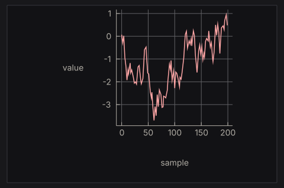
The chart API is small:
line,scatter,bar,area, andstepbuild series from points (or category/value pairs for bars).charttakes the list of series;withGrid,withLegend,withXAxis,withYAxis, andwithTitledecorate it.plot cache layout theChartdraws it and returns aPlotResponsewhoseplotHoveris the nearest data point under the pointer.
Building the Chart value every frame is cheap: it is a plain value, and comparing a few hundred points costs little. Rebuilding the diagram is expensive, and the PlotCache skips it when the chart and theme are unchanged.
6. Try it
- Add a search that runs on every keystroke (key by the query) and compare the cancellation behaviour with
searchInput'. - Stream markdown tokens into
NanoUI.Markdownand append them incrementally (see Ecosystem Packages). - Virtualize a 100,000-row log list using
getScrollMetricsUi(see Layout & Scrolling and theLogs.hsexample). - Replace the streamed chart with a
Taskthat loads a whole dataset once.
The full lifecycle reference is Async Work & Animation.
State & Var
The view runs every frame, and nothing survives between frames except state you keep. Most state lives in a Var, a typed mutable reference. Input widgets take the Var they display and mutate it directly, with no callback.
counter :: NanoUI ()
counter = rowWith (gap 8 . alignMid) $ do
n <- useVar (0 :: Int)
whenM (button "-") (modifyVar n (subtract 1))
label . T.pack . show =<< readVar n
whenM (button "+") (modifyVar n (+ 1))
Keep state, derive values
A value that changes over time and cannot be recomputed belongs in a Var. A value that can be recomputed belongs in a local binding, computed fresh every frame:
appView :: App -> NanoUI ()
appView app = do
-- Keep: the inputs to the next frame.
draft <- useVar ""
settings <- readVar app.appSettings
textInput draft
-- Derive: computed from what was kept.
len <- T.length <$> readVar draft
label ("Signed in as " <> settings.nickname)
label ("Draft: " <> T.pack (show len) <> " characters")
A derived value copied into a second Var drifts as soon as one writer forgets to update it.
Allocating state
There are two ways to create a Var, plus one for dynamic collections:
useVar | newVar | |
|---|---|---|
| Where | Inside the view | In IO, during setup |
| Types | Int, Float, Double, Bool, Text, SortCol (useEnumVar for any Bounded/Enum type) | Any type |
| Identity | The call site, counted in call order | The reference itself |
| Best for | View-local state: a draft, an open flag, a filter | Application state: a document, a list, a settings record, a task |
useVar needs no setup. Its initial value is used only when the slot is first created; call writeVar to reset it later. Its slots are counted separately from widget ids, but a conditional useVar still needs scope so later slots keep their positions:
advanced :: NanoUI ()
advanced = do
showAdvanced <- useVar False
checkbox "Advanced" showAdvanced
scope . whenM (readVar showAdvanced) $ do
level <- useVar (3 :: Float)
slider 0 10 level
newVar can hold any type. Allocate it once in IO and pass it into the view:
data App = App
{ appSettings :: Var Settings
, appTodos :: Var [Todo]
}
deriving (Generic)
newApp :: IO App
newApp = App <$> newVar (Settings 40 False "Ada") <*> newVar []
main :: IO ()
main = do
app <- newApp
runSdlApp defaultSdlOptions (appView app)
Passing the same Var to two widgets shares their state. Allocating a Var inside the view creates a fresh one on every pass.
For dynamic collections, VarMap gives one Var per key:
data RowState = RowState {editing :: Bool, rowDraft :: Text}
deriving (Eq, Generic)
newRows :: IO (VarMap Int RowState)
newRows = newVarMap
todoRows :: VarMap Int RowState -> [Int] -> NanoUI ()
todoRows rows liveIds = do
for_ liveIds $ \todoId -> withKey todoId $ do
rowState <- varAt rows todoId (RowState False "")
checkbox "Editing" rowState.editing
retainVars (`elem` liveIds) rows
varAt returns the existing Var for a key or creates it. dropVar removes one; retainVars keep prunes everything whose key fails the predicate.
Projections and read-only views
A record in a Var gives a Var for each field. With Generic and OverloadedRecordDot:
data Settings = Settings
{ volume :: !Float
, silent :: !Bool
, nickname :: !Text
}
deriving (Eq, Generic)
settingsView :: Var Settings -> NanoUI ()
settingsView settings = do
slider 0 100 settings.volume
checkbox "Silent" settings.silent
textInput settings.nickname
settings.volume is a Var Float projecting one field. Editing it does not repaint what reads only settings.nickname.
constVar xis read-only; writes are no-ops. Use it for a derived value shown in an input widget.withValue val widgetruns aVarwidget against a temporaryVarand returns the result and final value.nano-ui-emituses it foremitChanged.zoomVar getter setterprojects a computed part of a largerVar;zoomVarLdoes the same from a lens.forEachVar key list bodygives per-elementVars that follow their keys across reorders.withElemVarsis the variant for filtering or sorting yourself.
What a write costs
readVar records a dependency for the current pass. When the value changes, nano-ui classifies the write:
| Write | When | Cost |
|---|---|---|
| Forward | Written before any read this pass | One pass; later reads see the new value |
| Backward | Written after being read earlier this pass | A second view pass, with one-shot input events cleared |
| Unchanged | New value == old value | No-op: no pass, no repaint |
Two habits follow:
- Place
readVarbelow the widget that edits the value when the order is free. Typing then resolves in one pass; reading above it costs a second pass per change. - Do not
readVara value only to pass it back into the same widget. Passing theVaris enough.
A freshly computed NaN is never unchanged (NaN /= NaN), so writing one every pass redraws forever. Guard the write.
Tip
When an input widget is bound to a
Varand nothing in the view callsreadVaron it, only that widget repaints on change. AreadVarpromotes the write to a full-window repaint.
peekVar reads without recording a dependency. readVarIO, writeVarIO, and modifyVarIO are the thread-safe versions; after a background write, call the callback from askWake to schedule a frame. Never touch the UI Context from a worker thread.
Lifetime and resources
Tasks, streams, image handles, drag handles, plot caches, and file-dialog ids are allocated in IO during setup and stored in the application record, exactly like a newVar:
data Editor = Editor
{ editorDocument :: Var TextDocument
, editorSearch :: Task Text [Text]
}
newEditor :: IO Editor
newEditor = Editor <$> newVar emptyDocument <*> newTask
A handle allocated inside the view is a per-frame leak. If the view needs a new handle when a key changes, allocate it in setup and key its use, or use a hook that owns its lifetime (useTask, useStream, useImageRgba).
Where should this value live?
| The value… | Put it in |
|---|---|
| Is a draft, open flag, selection, or filter used by one view | useVar / useEnumVar |
| Is a list, document, settings record, or handle | newVar in IO, stored in the app record |
| Belongs to one row of a dynamic list | A keyed Var (forEachVar, withElemVars, VarMap) |
| Already lives outside the UI | An IORef or app record, woken with askWake |
Is a pure state machine with a clear msg -> model -> model | The Elm-style reducer |
Next: Widget Identity & Keys for keyed lists and conditional UI, or Elm-Style State for the reducer alternative.
Widget Identity & Keys
Widget state (caret position, text selection, an open drop-down, a scroll offset, per-row local Vars) is stored under the widget’s id. Ids come from the call order among siblings. If the order changes, the state jumps to a different widget.
How ids are assigned
Each container assigns ids to its children counting from zero. A column with three labels has children 0, 1, and 2; a nested row starts its own count.
Two separate id spaces exist:
- Widget ids, for layout nodes, focus, input state, and scroll state.
useVarslots, counted in call order, with their own counter and key space.
A conditional widget does not shift useVar slots, and a conditional useVar does not shift widget ids. Both still shift their own kind; scope prevents that.
Rule 1: keep the call order stable
The structure of the calls should be the same on every frame. Straight-line code and ordinary if/case over widget values are fine; conditionally calling a widget changes the count for everything after it.
Rule 2: wrap conditional subtrees in scope
scope reserves one slot whether or not its body runs, so later siblings keep their ids:
-- BAD: when showDetails is False, every later sibling shifts down one id.
detailsBad showDetails detailsVar =
when showDetails $ do
label "Details..."
textInput detailsVar
-- GOOD: one stable slot, whether or not the body runs.
detailsGood showDetails detailsVar =
scope $
when showDetails $ do
label "Details..."
textInput detailsVar
The same applies to a branch that swaps two widgets:
todoLabel :: Bool -> Var Text -> Todo -> NanoUI ()
todoLabel isEditing draft todo =
scope $
if isEditing
then textInput draft
else label (todoText todo)
scope is cheap. Use it around anything that may not run every frame: a conditional block, a case whose branches declare different widgets, a loading placeholder. Overlays are the exception: call them unconditionally (Rule 4).
Rule 3: key dynamic lists with withKey
Never key a list item by its index. Wrap each item in withKey with a stable, sibling-unique key: an item id, a UUID, a file path.
todoList :: [Todo] -> NanoUI ()
todoList items =
column $ for_ items $ \todo ->
withKey (todoId todo) $
row $ do
label (todoText todo)
whenM (button "Delete") (deleteItem (todoId todo))
Without the key, removing the first row makes every later row inherit the previous row’s caret, selection, and local Vars. With it, the row’s state travels with the item through filters, sorts, and reorders.
withKey is also how per-row useVar calls stay attached to their row:
expandable :: [Todo] -> NanoUI ()
expandable items =
for_ items $ \todo ->
withKey (todoId todo) $ do
expanded <- useVar False -- follows todoId, not the row index
checkbox (todoText todo) expanded
The full todo-list tutorial builds this up step by step: Build a Todo List.
Lists that use Vars per element
For a list stored in a Var [a], forEachVar key list body gives each element a Var a and puts the body under the element’s key automatically. withElemVars does the same but passes the elements and an at accessor, for when you filter or sort the list yourself:
visibleTodos :: Var [Todo] -> NanoUI ()
visibleTodos items =
withElemVars todoId items $ \todos at ->
forM_ (filter visible todos) $ \todo ->
withKey (todoId todo) (todoRow (at todo))
Rule 4: call overlays unconditionally
modal, window, and popup take a Var Bool for their open state and draw nothing while it is false. Call them every frame:
deleteDialog :: NanoUI ()
deleteDialog = do
confirm <- useVar False
whenM (button "Delete...") (writeVar confirm True)
modal confirm "Delete the file?" $
whenM (button "Delete") (deleteFile >> writeVar confirm False)
Wrapping the call in when shifts every later sibling’s id each time the dialog opens or closes. For derived open state, pass constVar and use the primed variants.
Rule 5: retain state for dynamic collections
Widget and Var state under a key survives the key not being drawn for a while: hide a filtered row and show it again, and its draft is still there. That state is not freed automatically. For an unbounded collection (a chat log, a set of tabs, a streaming table), keep the per-row state in a VarMap and prune it periodically:
pruneRows :: VarMap Int RowState -> [Int] -> NanoUI ()
pruneRows rowVars liveIds = retainVars (`elem` liveIds) rowVars
Prune too little and state for deleted rows accumulates; prune too eagerly and a filtered-out row loses its draft. Choose per collection: a todo row can keep its draft while hidden, a row from a 100,000-row log cannot.
Symptoms and their fixes
| Symptom | Likely cause |
|---|---|
| Typing in one field moves the caret in another | A conditional widget before it changed the id count; wrap the branch in scope. |
| Deleting a row resets the next row’s edit state | The list is keyed by index; use withKey item.id. |
| A modal’s fields do not respond after opening another modal | The modal is called conditionally; call it unconditionally with a Var Bool. |
| State appears in the wrong row after sorting | Per-row useVars are outside withKey, or the key is the index. |
| Memory grows with every streamed entry | Per-row state is in an unbounded VarMap; retainVars. |
For allocation, projections, and write costs, read State & Var. For the lifecycle that makes ids reset, read Architecture & Internals.
Elm-Style State
nano-ui-emit is the reducer-based alternative to Var: the view emits typed messages, and a pure reducer folds them into a model.
data Model = Model {counter :: Int, name :: Text}
deriving Eq
data Msg = Increment | Decrement | SetName Text
view :: Model -> NanoUIE Msg ()
view m = column $ do
heading "Profile"
row $ do
emitWhen (button "-") Decrement
label (T.pack (show m.counter))
emitWhen (button "+") Increment
emitChanged textInput m.name SetName
update :: Msg -> Model -> Model
update Increment m = m {counter = m.counter + 1}
update Decrement m = m {counter = m.counter - 1}
update (SetName n) m = m {name = n}
main :: IO ()
main = runSdlAppReduce defaultSdlOptions update (Model 0 "Ada") view
Widgets, layout, focus, and keys are unchanged. Only the state model differs.
Emitting
NanoUIE msg a is a UI action that can emit only msg. There is no Typeable constraint and no runtime type test: emitting the wrong type is a compile error.
A NanoUIE view is an ordinary NanoUI action with the view’s message sink in scope (an implicit parameter, ?emit). Every core widget runs in it unchanged, so NanoUI.Emit re-exports NanoUI and adds the functions below. An emit inside a container, an overlay body, a tab or a menu callback goes to the sink of the view around it.
| Function | Emits when |
|---|---|
emit msg | Immediately |
emitWhen widget msg | The widget returns True (button click, submitted field) |
emitChanged widget old toMsg | A Var a -> NanoUI r widget’s final value differs from old |
emitEdited widget old toMsg | The widget’s value changed and respChanged is true |
settingsForm :: Float -> NanoUIE Msg ()
settingsForm volume =
column $ do
label "Settings"
withKey ("form" :: Text) $ do
emitChanged (slider 0 100) volume SetVolume
emitWhen (button "Save") Save
emitChanged runs the widget against a temporary Var seeded with the model value and emits the new value only if it differs. emitEdited is its stricter form for text fields, where programmatic writes should not look like edits.
Give each view a signature in its own message type, view :: Model -> NanoUIE Msg (). The runners take a view of that shape, and a local helper defined outside a view needs the signature too, or GHC finds no sink for its emit.
Caution
Emit only inside an event branch.
emit Saveat the top level of a view emits on every pass, and the reducer runs every message. The adapters above already guard on the widget’s event.
Messages are collected across every pass of a frame, including local-Var rebuilds, and reduced at frame end in emission order.
Components
mapMessages embeds a child view whose message type is smaller than its parent’s:
data ChildMsg = ChildIncrement | ChildReset
data ParentMsg = Child ChildMsg | SaveAll
childView :: Int -> NanoUIE ChildMsg ()
childView n = row $ do
emitWhen (button "+") ChildIncrement
label (T.pack (show n))
emitWhen (button "Reset") ChildReset
parentView :: Int -> NanoUIE ParentMsg ()
parentView n = column $ do
mapMessages Child (childView n)
emitWhen (button "Save All") SaveAll
Messages go straight to the parent’s sink in traversal order, with no intermediate queue. mapMessages changes only the message type and leaves widget ids unchanged, so a list still needs withKey around each component, exactly as a Var-based row does.
For local UI state, keep using Var inside the component; the durable model stays in NanoUIE.
Running and testing
runSdlAppReduce and runRgfwAppReduce take an update function, an initial model, and a view:
main :: IO ()
main = runSdlAppReduce defaultSdlOptions update initialModel view
The view runs with the current model, messages are reduced at frame end, and the drawing shown for that frame is from before the reduction. If the model changed, another frame is requested to draw it.
For tests and embedded uses:
| Function | Returns |
|---|---|
runNanoUIE view | NanoUI (result, [msg]) |
runFrameE ctx input view | IO (result, [msg], DrawData, Bool) |
runFrameReduce update ctx input model view | IO (result, model, [msg], DrawData, Bool) |
runClickReduce update ctx input model view pos | IO (model, [msg], Bool) |
runFrameReduce requests a follow-up frame when the reduced model differs. reduceMessages and reduceUpdates fold message lists.
When to use it
Var-first | Elm-style | |
|---|---|---|
| State shape | Distributed through the view and app record | One model value |
| Transitions | Direct mutation | Explicit Msg and one update |
| Testing | Widget-level with NanoUI.Testing | Pure update tests plus frame tests |
| Local widget state | Natural | Still use Var for drafts and open flags |
| Best for | Tools and editors with external state | State machines, wizards, undo/history, small apps with a clear model |
The styles mix. An emitting view can keep Vars for transient UI state; a Var-based view can run a small component with runNanoUIE and act on the returned messages.
Keep update pure: file and network I/O belong in the view’s event branch, or in an effect queue run outside the reducer. Do not mirror model state in Vars to read it a frame earlier; keep durable state in the model only.
Layout & Scrolling
Every container takes its layout as an argument: row and column take a layout, and rowWith/columnWith take a Layout -> Layout function first. Modifiers compose with (.), and when two set the same property, the leftmost wins.
settingsPanel :: NanoUI ()
settingsPanel =
columnWith (gap 8 . padAll 12 . fillW) $ do
label "Settings"
whenM (buttonWith (fixedW 120) "Apply") apply
Logical pixels, origin top-left, y downward. Backends handle DPI scaling.
Each example below expands to its code and the frame it renders. The frames add padAll 14 and fill the window so the spacing shows.
Containers
A container wraps a NanoUI block and arranges the widgets it draws. The plain form (row) uses the inherited layout; the ...With form takes a modifier function.
row / rowWith: children left to right
rowExample =
rowWith (gap 8) $
mapM_ (void . button) ["One", "Two", "Three"]
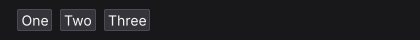
column / columnWith: children top to bottom
columnExample =
columnWith (gap 8) $
mapM_ (void . buttonWith fillW) ["One", "Two", "Three"]
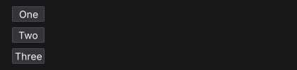
grid / gridWith: rows of equal columns
gridExample =
gridWith 3 (gap 8 . fillW) $
mapM_
(\i -> void (buttonWith fillW ("Cell " <> T.pack (show (i :: Int)))))
[1 .. 6]
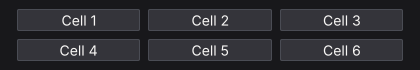
panel / panelWith: a styled surface
panelExample =
panelWith (fixedW 300 . padAll 12 . gap 6) $ do
heading "Deployments"
muted "3 services running"
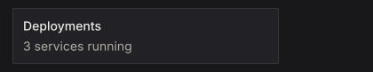
card: a full-width panel with a minimum width
cardExample =
card $ do
heading "Build #482"
muted "Passed in 1m 42s"
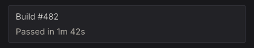
callout: a panel tinted by a semantic colour
calloutExample = do
warnCol <- themeWarning <$> uiTheme
callout warnCol $ do
heading "Certificate expiring"
muted "TLS certificate expires in 3 days."
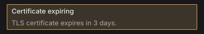
layers: children stacked in one box, later on top
layersExample =
layers $ do
let badgeRed = colorRGB 204 64 64
void (buttonWith (fixedWH 170 40) "Inbox")
styled (panelStyle (background badgeRed . borderColor badgeRed)) $
panelWith (alignEnd . alignTop . padXY 6 1) $
labelWith (fontColor colorWhite) "3"
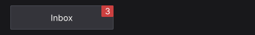
center: content centred on both axes
centerExample =
panelWith (fillW . fillH) $
center (label "Centred on both axes")
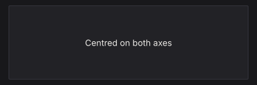
responsive / responsiveRowCol: one layout when wide, another when narrow
responsive breakpoint wide narrow body picks a container by window width; responsiveRowCol is the common row/column pair.
responsiveExample =
responsiveRowCol 640 (tight . gap 8 . fillW) $ do
panelWith (fillW . padAll 12) (label "Sidebar")
panelWith (fillW . padAll 12) (label "Content")
A 420 px window:
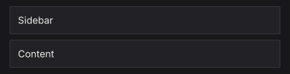
The same view at 760 px:
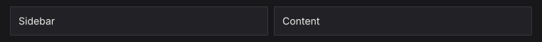
mouseArea: hover and clicks for a whole region
mouseAreaExample = do
(_, area) <-
panelWith fillW $
mouseArea (fillW . padAll 10 . gap 4) $ do
label "build.log"
muted "Click anywhere in this card"
when (respClicked area) (muted "opening build.log")
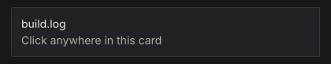
separator: a one-pixel rule
separatorExample =
columnWith (fillW . gap 8) $ do
label "Above the rule"
separator
label "Below the rule"
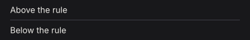
spacer: flexible space between siblings
spacerExample =
rowWith (fillW . alignMid) $ do
label "Left"
spacer (Grow 1) Fit
label "Right"
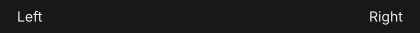
Modifiers
Modifiers are Layout -> Layout functions, so they chain with (.). The leftmost wins when two set the same property, so tight . padAll 14 has no padding while padAll 14 . tight keeps it.
Sizing
fillW: take all remaining width
fillWExample =
rowWith (fillW . gap 8) $ do
void (buttonWith (fixedW 110) "fixedW 110")
void (buttonWith fillW "fillW")
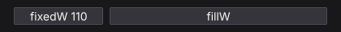
fillH: take all remaining height
fillHExample =
rowWith (fillW . gap 8 . fixedH 96) $ do
panelWith (fixedW 120 . fillH) (label "fillH")
panelWith (fixedW 120) (label "natural")
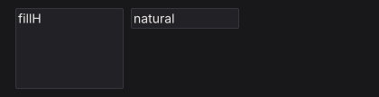
grow: fill both axes (fillW . fillH)
growExample =
rowWith (grow . gap 8) $ do
panelWith (fixedW 120) (label "fixedW 120")
panelWith grow (label "grow")
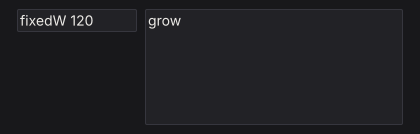
fixedW: an exact width
fixedWExample =
rowWith (gap 8) $ do
void (buttonWith (fixedW 60) "60")
void (buttonWith (fixedW 110) "110")
void (buttonWith (fixedW 170) "170")
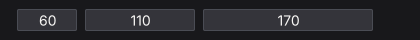
fixedH: an exact height
fixedHExample =
rowWith (gap 8 . fillW) $ do
void (buttonWith (fixedH 30) "fixedH 30")
void (buttonWith (fixedH 56) "fixedH 56")
void (buttonWith (fixedH 82) "fixedH 82")
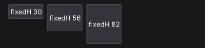
fixedWH: an exact width and height
fixedWHExample =
rowWith (gap 8) $ do
void (buttonWith (fixedWH 120 36) "120 x 36")
void (buttonWith (fixedWH 200 72) "200 x 72")
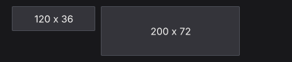
minW: a lower width bound
minWExample =
rowWith (fillW . gap 8) $ do
void (buttonWith (minW 200) "minW 200")
void (button "natural")
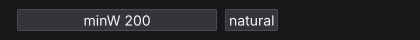
maxW: an upper width bound
maxWExample =
rowWith (fillW . gap 8) $ do
void (buttonWith (fillW . maxW 160) "maxW 160")
void (buttonWith fillW "fillW")
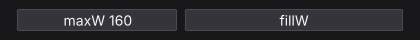
minH: a lower height bound
minHExample =
rowWith (fillW . gap 8) $ do
panelWith (minH 80 . fillW) (label "minH 80")
panelWith fillW (label "natural")
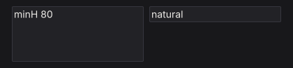
maxH: an upper height bound
maxHExample =
rowWith (fillW . gap 8 . fixedH 100) $ do
panelWith (maxH 50 . fillW) (label "maxH 50")
panelWith (fillW . fillH) (label "fillH")
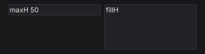
percent: a percentage of the parent's width
percentExample =
rowWith (fillW . gap 8) $ do
panelWith (percent 30) (label "percent 30")
panelWith (percent 60) (label "percent 60")
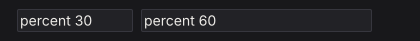
aspect: keep a width / height ratio
aspectExample =
panelWith (fillW . aspect (16 / 9)) $
center (label "16 : 9")
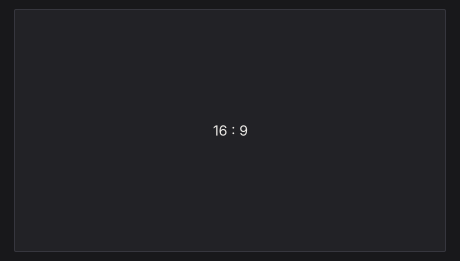
Spacing
padAll: equal padding on all four edges
padAllExample =
panelWith (fixedWH 260 120 . padAll 20) $
panelWith (fillW . fillH) (label "padAll 20")
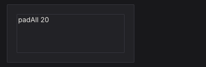
padXY: horizontal, then vertical, padding
padXYExample =
panelWith (fixedWH 280 100 . padXY 32 10) $
panelWith (fillW . fillH) (label "padXY 32 10")
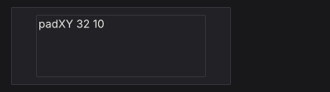
padLeft: left padding
padLeftExample =
panelWith (fixedWH 260 100 . padLeft 48) $
panelWith (fillW . fillH) (label "padLeft 48")
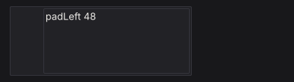
padRight: right padding
padRightExample =
panelWith (fixedWH 260 100 . padRight 48) $
panelWith (fillW . fillH) (label "padRight 48")
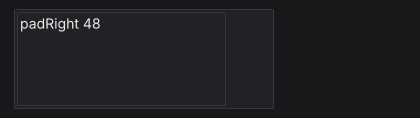
padTop: top padding
padTopExample =
panelWith (fixedWH 260 120 . padTop 40) $
panelWith (fillW . fillH) (label "padTop 40")
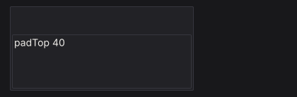
padBottom: bottom padding
padBottomExample =
panelWith (fixedWH 260 120 . padBottom 40) $
panelWith (fillW . fillH) (label "padBottom 40")
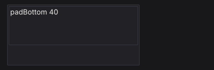
padLRTB: left, right, top, bottom padding
padLRTBExample =
panelWith (fixedWH 280 120 . padLRTB 40 8 30 12) $
panelWith (fillW . fillH) (label "padLRTB 40 8 30 12")
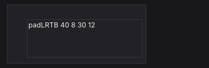
gap: space between children
gapExample =
columnWith (fillW . gap 12) $ do
rowWith (gap 4) $ mapM_ (void . button) ["gap 4", "B", "C"]
rowWith (gap 24) $ mapM_ (void . button) ["gap 24", "B", "C"]
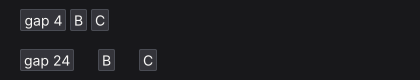
tight: remove container padding, keep the gap
tightExample =
rowWith (gap 16 . fillW) $ do
panelWith (padAll 14 . gap 6 . fillW) $ do
muted "padAll 14"
label "default padding"
panelWith (tight . padAll 14 . gap 6 . fillW) $ do
muted "tight"
label "no padding"
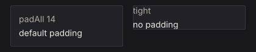
Alignment and wrapping
alignStart, alignCenter, and alignEnd place a child across a column. alignTop, alignMid, and alignBottom place it down a row. An alignment modifier positions the node it is applied to inside its parent. alignMid on a row moves the row; to centre the row’s children, put alignMid on each child.
alignStart: the left edge
alignStartExample =
panelWith (fixedWH 300 110 . padAll 10) $
void (buttonWith (alignStart . fixedW 140) "alignStart")
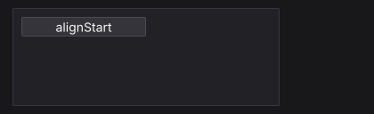
alignCenter: the horizontal centre
alignCenterExample =
panelWith (fixedWH 300 110 . padAll 10) $
void (buttonWith (alignCenter . fixedW 140) "alignCenter")
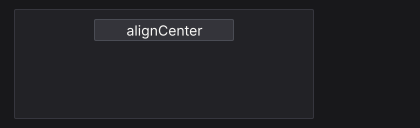
alignEnd: the right edge
alignEndExample =
panelWith (fixedWH 300 110 . padAll 10) $
void (buttonWith (alignEnd . fixedW 140) "alignEnd")
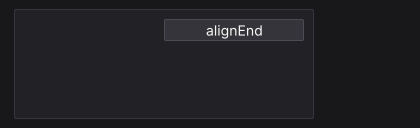
alignTop: the top edge
alignTopExample =
panelWith (fixedWH 300 110 . padAll 10) $
rowWith (fillW . fillH . gap 8) $
void (buttonWith (alignTop . fixedW 140) "alignTop")
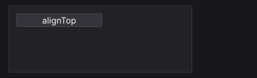
alignMid: the vertical centre
alignMidExample =
panelWith (fixedWH 300 110 . padAll 10) $
rowWith (fillW . fillH . gap 8) $
void (buttonWith (alignMid . fixedW 140) "alignMid")
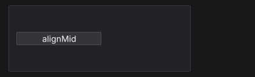
alignBottom: the bottom edge
alignBottomExample =
panelWith (fixedWH 300 110 . padAll 10) $
rowWith (fillW . fillH . gap 8) $
void (buttonWith (alignBottom . fixedW 140) "alignBottom")
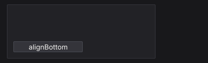
alignBaseline: share the first baseline
alignBaselineExample =
rowWith (gap 12 . fixedW 340) $ do
labelWith (fontSize 24 . alignBaseline) "Title"
labelWith alignBaseline "baseline text"
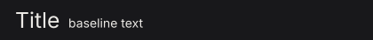
wrap: start a new line when a child does not fit
wrapExample =
rowWith (wrap . gap 6 . fixedW 280) $
mapM_ (void . button) ["haskell", "immediate", "mode", "layout", "sdl", "widgets"]
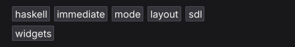
lineGap: space between wrapped lines
lineGapExample =
columnWith (fillW . gap 16) $ do
let labels = ["haskell", "immediate", "mode", "layout", "sdl", "widgets"]
muted "lineGap 2"
rowWith (wrap . lineGap 2 . gap 6 . fixedW 280) $ mapM_ (void . button) labels
muted "lineGap 18"
rowWith (wrap . lineGap 18 . gap 6 . fixedW 280) $ mapM_ (void . button) labels
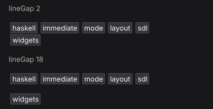
lineAlign: align wrapped lines in the container
lineAlignExample =
rowWith (wrap . lineAlign LinesCenter . gap 6 . fixedW 210) $
mapM_ (void . button) ["alpha", "beta", "gamma", "delta", "epsilon"]
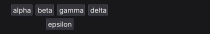
Positioning and pointer behavior
pinAt takes a child out of the flow. pointer sets whether an overlapping region consumes pointer events (PointerBlock) or passes them to what is underneath (PointerPass). The pointer examples park the pointer over the overlay.
pinAt: position absolutely inside the parent
pinAtExample =
panelWith (fixedWH 280 110 . padAll 12) $ do
heading "Inbox"
muted "The badge is pinned, not stacked."
let badgeCol = colorRGB 204 64 64
styled (panelStyle (background badgeCol . borderColor badgeCol)) $
panelWith (pinAt 6 (-6) . alignEnd . alignTop . padXY 6 1) $
labelWith (fontColor colorWhite) "12"
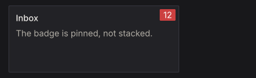
pointer PointerBlock: consume pointer events over a region
pointerBlockExample =
layers $ do
void (buttonWith (fixedWH 200 44) "Open logs")
styled (panelStyle (background (colorRGBA 0 0 0 150) . borderWidth 0)) $
panelWith (pinAt 0 0 . grow . pointer PointerBlock . padAll 6) $
muted "scrim"
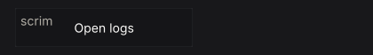
pointer PointerPass: let pointer events through
pointerPassExample =
layers $ do
void (buttonWith (fixedWH 200 44) "Open logs")
labelWith (pinAt 8 (-6) . pointer PointerPass) "decorative label"
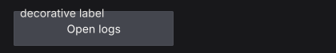
Scrolling
A scroll container needs a bounded viewport on its scrolling axis:
itemList :: [Text] -> NanoUI ()
itemList items =
scrollWith (fixedH 300 . fillW) $
column $ for_ items label
Without a bounded ancestor, grow can leave a scroller with nothing to size against.
scrollWithreturns the body’s result.scrollAreaalso returns the scroller’sWidgetId, for programmatic control.scroll2DWith/scrollArea2Dscroll both axes.- A scroller that fills both axes (
grow) drops its well and paints the page background (pageBackground,themeWindowby default). Scope a view instyled panelPagefor a page on the panel surface.
Virtualization
For 10,000+ rows, build only the visible slice and use spacers for the rest. Capture the scroller id and read the previous layout with getScrollMetricsUi:
virtualizedList :: [Item] -> NanoUI ()
virtualizedList items = do
sid <- currentId
scrollWith (fixedH 500 . fillW) $ do
metrics <- getScrollMetricsUi sid
let rowH = 28
total = length items
(offsetY, viewH) = case metrics of
Nothing -> (0, 0)
Just m -> (v2Y (scrollOffset m), rectH (scrollViewport m))
firstVisible = max 0 (floor (offsetY / rowH))
lastVisible = min total (firstVisible + ceiling (viewH / rowH) + 2)
topH = fromIntegral firstVisible * rowH
bottomH = fromIntegral (total - lastVisible) * rowH
visibleRows = take (lastVisible - firstVisible) (drop firstVisible items)
columnWith (tight . fillW) $ do
when (topH > 0) (spacer Fit (Fixed topH))
for_ visibleRows $ \item ->
withKey (itemId item) $
labelWith (fixedH rowH . fillW) (itemTitle item)
when (bottomH > 0) (spacer Fit (Fixed bottomH))
scrollViewport excludes padding and the scrollbar lane; use it instead of the container rectangle for the visible height. scrollOffset is the current offset. The metrics read registers a layout dependency, so a resize triggers another frame.
See packages/nano-ui-demo/examples/LongList.hs (100,000 rows) and Logs.hs (sticky-to-bottom).
Programmatic scrolling and wheel tuning
reveal :: WidgetId -> Float -> Int -> Bool -> NanoUI ()
reveal sid rowH index shouldReveal =
when shouldReveal $
scrollRectIntoViewUi sid (Rect 0 (fromIntegral index * rowH) 1 rowH) ScrollNearest ScrollInstant
From a view: scrollToUi, scrollByUi, scrollPagesUi, scrollRectIntoViewUi, setScrollOffsetUi, setScrollStepUi. The Context variants (scrollTo, getScrollOffset2D, …) are for IO.
One wheel notch scrolls 60 logical pixels by default. For fixed-height rows, set the step so a notch is one row (askContext is in NanoUI.Monad):
oneRowPerNotch :: Float -> NanoUI ()
oneRowPerNotch rowHeight = do
ctx <- askContext
liftIO $ setScrollTuning ctx defaultScrollTuning
{scrollWheelStep = rowHeight, scrollSmoothTime = 0}
setScrollStepUi sid px overrides one scroller; 0 restores the context step.
Nesting and chrome
scrollArea, panel, and card each draw a background, border, and radius. Nesting them inside a popup or dialog draws a box in a box. Draw the chrome at one level only: flatten the inner surface with styled (inputStyle (background colorTransparent . borderWidth 0)), or give the outer dialog padAll 0 and pad the inner body.
See Styling Gotchas and Troubleshooting for the recurring cases.
Widget Gallery
Every widget is an ordinary function exported from NanoUI.
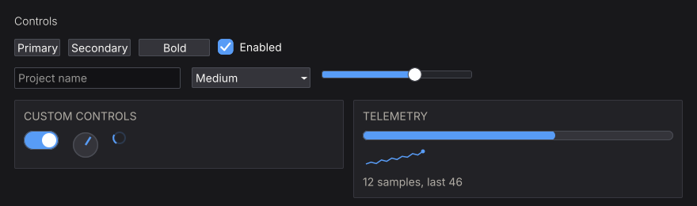
Find a widget by task
| You need… | Read |
|---|---|
| Buttons, menus, checkboxes, toggles, radios, selects, combo boxes, sliders, numeric fields, text fields, color pickers | Buttons, Menus & Inputs |
| Multi-line text, documents, undo history, IME-aware editing | Text Editing |
| Tabs, sortable tables, trees | Tabs, Tables & Trees |
| Modals, floating windows, popups, tooltips, context menus | Overlays & Windows |
| Drag-and-drop, tab reordering, dockable pane grids | Drag & Drop |
| Knobs, switches, progress bars, spinners, sparklines, canvas drawing | Custom Drawing & Controls |
| Colors, themes, interaction states, fonts | Styling & Theming |
| Live examples of every styling modifier | Interactive Styling Lab |
| Non-obvious styling behavior | Styling Gotchas |
Containers (row, column, grid, panel, card, layers, …) and sizing are covered once in Layout & Scrolling.
How widget names work
The same four forms appear across the library:
| Form | Meaning |
|---|---|
button "Save" | Base form. Returns Bool (activated) or () |
button' | Primed form. Returns a Response |
buttonWith (fixedW 120) | Takes a Layout -> Layout modifier first |
buttonConfigured cfg | Takes a config record; every config has a default...Config |
A Response carries identity and interaction state:
| Field / helper | Meaning |
|---|---|
respId | The widget’s WidgetId (focus, menus, scroll targets) |
respRect | The widget’s rectangle from the previous frame |
respHovered | Pointer is over the widget |
respPressed | Held down, not yet released |
respClicked | Activated: left click, Enter, or Space |
respChanged | The value was edited |
respSubmitted | Committed, for example Enter in a text field |
respHeldWith / respClickedWith | Which MouseButton is held / clicked |
respRightPressed / respRightClicked | Secondary-button variants |
Anything with a Response can be passed to tooltip, contextMenu, and the focus helpers.
Buttons, Menus & Inputs
Buttons
button :: Text -> NanoUI Bool
button' :: Text -> NanoUI Response
buttonWith :: (Layout -> Layout) -> Text -> NanoUI Bool
buttonContent :: NanoUI () -> NanoUI Bool
iconButton :: Svg -> Text -> NanoUI Bool
button returns True only on the frame it is activated, by left click or by Enter/Space while focused:
saveButton = whenM (button "Save Document") (liftIO saveFile)
Use the primed form when you need the response: hover state, a rectangle for an anchored popup, or a tooltip.
refreshButton = do
resp <- button' "Refresh"
tooltip resp "Poll the remote server for updates"
when (respClicked resp) refresh
buttonContent puts any view inside a button. The content is for display; a click anywhere on the button activates it:
iconSaveButton =
whenM (buttonContent $ rowWith (gap 6 . alignMid) $ do
svgIcon 16 saveIcon
label "Save") $
saveDocument
iconButton puts an icon before the label; an empty label gives an icon-only square button.
Menus
menuItem draws a row and returns True when clicked. menuItemShortcut also displays a chord and binds it while the menu is open. menuSeparator and menuItemDisabled complete the row set.
A menu bar is a menuButton' plus a popup' anchored to its rectangle:
fileMenu = do
fileOpen <- useVar False
isOpen <- readVar fileOpen
btn <- menuButton' "File" isOpen
when (respClicked btn) (writeVar fileOpen (not isOpen))
let cfg = (defaultPopupConfig (AnchorRect (respRect btn)))
{cfgPlacement = PlacementBelow, cfgOffset = 0}
(popupResp, _) <- popup' (constVar isOpen) cfg $
columnWith (tight . gap 0) $ do
whenM (menuItemShortcut "New" (cmdOrCtrl <> key 'n')) newDocument
whenM (menuItem "Open...") openDocument
menuSeparator
whenM (menuItem "Exit") (writeVar fileOpen False >> quitUi)
when (respClicked popupResp) (writeVar fileOpen False)
constVar supplies a read-only open flag derived from the menu state, and the code writes a click on the popup back to the real Var.
Important
Call overlays unconditionally.
popup'draws nothing while closed, but wrapping it inwhen isOpenchanges later widget ids each time the menu opens.
Bind a command chord outside the menu as well as on its row, so it works with the menu closed:
saveBindings :: NanoUI ()
saveBindings = do
whenM (menuItemShortcut "Save" saveChord) saveDocument
whenM (shortcut saveChord) saveDocument
Only the first binding of a chord in a frame fires, so the open menu’s row wins. A complete menu bar is built in Build a Notepad.
contextMenu attaches a right-click menu to any widget with a Response:
rowMenu = do
(_, rowResp) <- mouseArea (fillW . gap 6) (label "Right-click for actions")
void $ contextMenu rowResp $ do
whenM (menuItem "Inspect") inspectRow
whenM (menuItem "Copy") copyRow
Input widgets
Input widgets read and write the Var they display, and store caret and selection state under their widget id. To reset a field, write the Var; to react to an edit, use the primed form’s Response.
| Widget | Signature | Description |
|---|---|---|
checkbox | Text -> Var Bool -> NanoUI () | Two-state box with a label |
toggleButton | Tone -> Text -> Var Bool -> NanoUI () | Two-state button, filled in the tone while on |
radio | Foldable f => f Text -> Var Int -> NanoUI () | Radio group over indexed options |
boundedRadio | (Bounded a, Enum a) => (a -> Text) -> Var a -> NanoUI () | Radio group over every enum value |
select | Foldable f => f Text -> Var Int -> NanoUI () | Drop-down select by index |
boundedSelect | (Bounded a, Enum a) => (a -> Text) -> Var a -> NanoUI () | Drop-down over every enum value |
comboBox | Foldable f => Text -> f Text -> Var Text -> NanoUI () | Placeholder, suggestions, free-text value |
slider | Float -> Float -> Var Float -> NanoUI () | Min, max, value |
textInput | Var Text -> NanoUI () | Single-line editable text |
searchInput | Text -> Var Text -> NanoUI () | Placeholder + search field with a clear button |
numericInput | Var Double -> NanoUI () | Numeric field with steppers |
colorPicker | Var Color -> NanoUI () | Saturation/value field and hue bar |
Every widget has the usual variants: primed (...') returns a Response, ...With takes a layout modifier, and ...Configured takes a config record. For example:
byteField = do
byte <- useVar (0 :: Double)
numericInputConfigured defaultNumericInputConfig
{nicMin = 0, nicMax = 255, nicHex = True} byte
Text and search fields
queryField = do
query <- useVar ""
resp <- textInput' query
when (respSubmitted resp) (search =<< readVar query)
when (respChanged resp) (preview =<< readVar query)
respChanged fires on every edit; respSubmitted fires on Enter. For expensive work use searchInput', whose respChanged is debounced (300 ms by default) and fires immediately when the field is cleared:
packageSearch = do
query <- useVar ""
resp <- searchInput' "Find a package" query
when (respChanged resp) (refreshResults =<< readVar query)
Choices
data Pace = Walk | Jog | Sprint
deriving (Eq, Show, Enum, Bounded)
choices = do
enabled <- useVar True
checkbox "Enable notifications" enabled
isBold <- useVar False
toggleButton Accent "B" isBold
pace <- useEnumVar Jog
enumRadio pace
enumSelect pace
select is index-based for data-driven options:
sizeSelect = do
choice <- useVar 0
select ["Small", "Medium", "Large"] choice
comboBox takes free text plus suggestions; its respChanged fires on commit; a model write alone does not set it.
Sliders, numbers, color
values :: Var Color -> NanoUI ()
values accent = do
volume <- useVar (40 :: Float)
slider 0 100 volume
count <- useVar (0 :: Double)
numericInput count
colorPicker accent -- accent <- newVar (colorHex "#38bdf8") in setup
numericInput accepts digits and a leading minus when the range allows it; arrow keys step, and Shift steps ten times as far. nicDecimals controls display and accepted precision. colorPickerRGBA adds an alpha bar.
Text Editing
textAreaedits aVar Text. Use it for short text: notes, descriptions, commit messages.textAreaDocumentedits aVar TextDocument, which shares unchanged lines between edits. Use it for files and code buffers.
textArea for short text
notes = do
draft <- useVar ""
textArea draft
Every edit builds a new Text, which is cheap for a few kilobytes.
textAreaDocument for documents
editorView :: Var WidgetId -> Var TextDocument -> NanoUI ()
editorView editorId docVar = do
resp <- textAreaDocumentWith' (grow . minW 320 . minH 200) docVar
when (respChanged resp) markDirty
writeVar editorId (respId resp)
Only the edited lines are copied; unchanged lines are shared. documentText materializes the whole text; call it when saving instead of on every edit.
save :: FilePath -> TextDocument -> NanoUI ()
save path doc = liftIO (BS.writeFile path (TE.encodeUtf8 (documentText doc)))
documentLineCount is cheap enough for a status bar.
One undo history
Keyboard edits, mouse selection, the right-click menu, and programmatic commands all dispatch TextCommands, so they share one undo history:
-- | Editing, navigation, selection, history, and clipboard operations on a
-- text field. Mutating commands record an undo step and replace any active
-- selection.
data TextCommand
= -- | Replace the selection with text (typing, a snippet).
InsertText !Text
| -- | Delete the selection, or from the cursor to where the motion lands:
-- @Delete CharLeft@ is Backspace, @Delete WordRight@ Ctrl+Delete.
Delete !TextMotion
| -- | Move the cursor, extending the selection when the flag is set.
-- Without it, 'CharLeft' and 'CharRight' over a selection go to its start
-- and its end.
Move !TextMotion !Bool
| SelectAll
| -- | Select from the first position (the anchor) to the second (the
-- cursor), clamped into the document.
Select !Cursor !Cursor
| -- | Replace the text between two positions, leaving the cursor after it.
Replace !Cursor !Cursor !Text
| -- | Replace the whole document as one undoable edit.
ReplaceAll !Text
| Undo
| Redo
| Cut
| Copy
| Paste
deriving (Eq, Show)
Run a command against a field by its WidgetId:
editMenu :: WidgetId -> Text -> NanoUI ()
editMenu editor today = do
whenM (menuItem "Undo") (runTextCommand editor Undo)
whenM (menuItem "Insert date") (runTextCommand editor (InsertText today))
Query history state for menu enablement:
undoState :: Var WidgetId -> NanoUI (Bool, Bool)
undoState editorId = do
editor <- readVar editorId
canUndo <- textCanUndo editor
canRedo <- textCanRedo editor
pure (canUndo, canRedo)
A complete Edit menu built this way is in Build a Notepad.
Tip
Directly overwriting the
Var TextorVar TextDocumentfrom outside resets the undo stack. To make a programmatic edit undoable, issue aTextCommand(InsertText,ReplaceAll, and so on) instead of writing theVar.
In the primed variants’ Response, respChanged is True after an edit and False after a caret move alone, so use it to mark a document dirty. respId names the editor for commands and focus.
Tabs, Tables & Trees
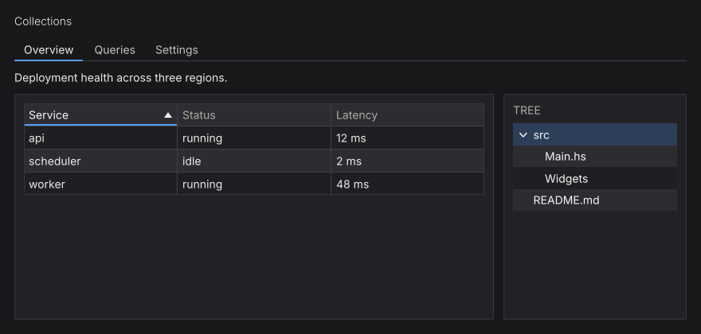
Tabs
A tab strip binds the active key to a Var; only the selected tab’s body runs:
data Page = Overview | Logs | Settings
deriving (Eq, Show, Enum, Bounded)
pages = do
page <- useEnumVar Overview
boundedTabs (T.pack . show) page $ \case
Overview -> overviewView
Logs -> logsView
Settings -> settingsView
tab creates a plain header; closableTab adds a close button and reports the close through the primed response:
closableTabs = do
active <- useVar ("overview" :: Text)
resp <- tabs' active
[ closableTab "overview" "Overview" overviewView
, closableTab "logs" "Logs" logsView
]
for_ (tabClosed resp) closeTab
tabs' reports tabClosed and leaves the tab in place; the caller removes it from its list. A key no tab has selects the first tab and writes that key back to the Var.
tabBar / tabBar' draw headers only and leave the body to the caller. tabsConfigured / tabBarConfigured take a TabsConfig:
segmented :: Var Text -> [Tab Text (NanoUI ())] -> NanoUI ()
segmented active docTabs =
let cfg = defaultTabsConfig
{tabsStyle = TabSegmented, tabsOrientation = TabTop, tabsTrailing = newTabButton}
in tabsConfigured cfg active docTabs
The four TabStyles, with a different tab selected in each:
| Style | Header treatment |
|---|---|
TabUnderline | Headers on a rule; the selected header has an accent bar |
TabPill | The selected header is filled with the accent color |
TabSegmented | Headers sit in a rounded track; the selected one is raised |
TabContained | Folder tabs; the selected header opens onto a bordered body |
Placements: TabTop, TabBottom, TabLeft, TabRight. boundedTabs / boundedTabBar generate a tab per enum value.
Tables
table renders Colonnade columns. Header clicks sort through a Var SortCol:
data Process = Process
{ pid :: Int
, name :: Text
, mem :: Int
}
processTable :: [Process] -> Var SortCol -> NanoUI ()
processTable procs sortVar =
table "procs" cols procs sortVar
where
cols = mconcat
[ headed "PID" (T.pack . show . pid)
, headed "Name" name
, headed "Memory (MB)" (T.pack . show . mem)
]
SortCol holds the active column and direction. simpleTable headers rows renders a table of text rows. table' returns a TableResponse with the updated sort, column order, and hidden columns; tableConfigured adds frozen rows/columns, fixed column widths, and hidden columns through TableConfig. Rows are virtualized internally.
Cell helpers: textCell, cellWidget, widgetCell, and Cell with an explicit sort key (cellKey). A cell with a widget view still needs cellText if its natural width should be measured.
Trees
items :: [TreeItem]
items =
[ TreeItem "src" [TreeItem "Main.hs" [], TreeItem "Widgets" []]
, TreeItem "README.md" []
]
fileTree :: [TreeItem] -> Var Int -> NanoUI ()
fileTree = tree "file-tree"
tree takes the library’s TreeItem type (treeItemLabel, treeItemChildren). The Var Int holds the selected item’s pre-order index. Build the index in the same pre-order when you need to map a selection back to an item. Collapsed nodes keep their state; rows are drawn as focusable buttons and support arrow-key navigation.
For large trees, keep the expansion set in a VarMap keyed by a stable path, and rebuild the visible items before calling tree.
To reorder tabs by dragging, see Drag & Drop.
Overlays & Windows
Modals, floating windows, and popups are ordinary NanoUI actions that take a Var Bool for their open state.
Call overlays unconditionally
modal :: Var Bool -> Text -> NanoUI () -> NanoUI ()
window :: Var Bool -> Text -> NanoUI () -> NanoUI ()
popup :: Var Bool -> PopupConfig -> NanoUI () -> NanoUI ()
Caution
Always call an overlay on every frame. Wrapping it in
when isShown (modal ...)shifts widget ids for all subsequent siblings when it opens or closes, which moves focus, carets, and per-row state. Overlays draw nothing while theirVar BoolisFalse.
confirmDelete = do
showConfirm <- useVar False
whenM (button "Delete File...") (writeVar showConfirm True)
modal showConfirm "Confirm Deletion" $ do
label "Are you sure you want to permanently delete this file?"
row $ do
whenM (button "Cancel") (writeVar showConfirm False)
whenM (styled destructive (button "Delete")) $ do
deleteFile
writeVar showConfirm False
Escape, a click outside, and the close button write False to the Var, so the dialog closes in the same frame. A modal blocks interaction with the content behind it and is drawn above it.
Modals
modal renders a titled panel with a close button, centered in the window and limited to the window’s bounds. The body is not scrolled automatically; wrap it in scrollWith for long content, and give the panel a size with modalWith when the body needs to fill it:
settingsDialog = do
open <- useVar False
modalWith (fixedWH 600 400) open "Settings" $
columnWith (fillW . fillH) settingsBody
modal' returns (Response, Maybe a) and reports a close request as a click. When the open flag is derived from other state, pass constVar and write the real flag from the response:
notice = do
open <- useVar False
isOpen <- readVar open
(resp, _) <- modal' (constVar isOpen) "Important" $ do
label "This dialog is shown while `open` is True."
whenM (button "OK") (writeVar open False)
when (respClicked resp) (writeVar open False)
For a modal without a title bar or close button, use modalPanel / modalPanel'; the panel surface and backdrop remain, and Escape or an outside click still writes False.
Floating windows
window draws a draggable, resizable in-app window with a scrolling body. Other windows and the page remain interactive outside its bounds:
inspector = do
inspectorOpen <- useVar False
window inspectorOpen "Inspector" $ do
inspectorBody
window' returns the body result and a response. Use window for panels that coexist with the main content, modal when the user must answer first.
Popups
popup is a floating panel placed by a PopupConfig:
filterPopup = do
filterOpen <- useVar False
showFruit <- useVar True
showVeg <- useVar True
filterR <- button' "Filter"
when (respClicked filterR) (modifyVar filterOpen not)
popup filterOpen (defaultPopupConfig (AnchorRect (respRect filterR))) $ do
checkbox "Fruit" showFruit
checkbox "Vegetables" showVeg
A press on the anchor counts as inside the popup, so the button that toggles the popup does not immediately reopen it.
Popup placement:
AnchorRect (respRect r)anchors to a widget;AnchorPoint posanchors to a coordinate.cfgPlacementchoosesPlacementAuto,PlacementBelow,PlacementAbove,PlacementAtCursor, and the other placements.cfgOffsetis the gap from the anchor.cfgDismissable = Falsedisables Escape/outside-click closing; act on the response frompopup'instead.
An anchored popup positions against the previous frame’s respRect, so warm a frame before relying on it in tests. For long popup bodies, cap the height with popupWith (maxH ...) and scroll the body.
Tooltips
Tooltips are stateless and attach to any widget with a Response:
tooltips = do
save <- button' "Save"
tooltip save "Write the file to disk"
more <- button' "More"
tooltipConfigured defaultTooltipConfig
{tooltipPlacement = PlacementAtCursor} more "Follows the pointer"
The default delay is half a second; TooltipConfig sets the delay and placement. withTooltip attaches a rich tooltip widget instead of text.
Rules
- Modals stack. Escape closes the innermost first; side-by-side modals close in declaration order.
- Allocate the open flag in the view that opens and closes the overlay, outside any child that may be skipped.
- Read focus after the overlay call.
- A
scrollArea,panel, orcardinside a dialog body draws a box in a box; strip its chrome (see Double borders).
Build a Notepad wires a modal to the window’s close request and builds a menu bar from popup'.
Drag & Drop
There are two kinds of drag: a pointer drag inside the window (reordering a list, moving tabs, docking panes), and files or text dropped in from another application. The hooks only report what happened. Applying a drop to your data is up to you.
Reordering a list
useReorder takes the current order of item ids and each item’s response, in drawn order:
chips :: Var [Int] -> NanoUI ()
chips orderVar = rowWith (gap 6) $ do
order <- readVar orderVar -- orderVar <- newVar [0 .. 4] in setup
drawn <- forM order $ \i -> (i,) <$> chip i
r <- useReorder order drawn
writeVar orderVar (reorderOrder r)
reorderOrder changes on the frame the item is dropped. Draw from reorderPreview instead to move the other items aside during the drag. reorderDragging is the held item, and reorderMoved is set once the press has moved past the drag threshold, so a click can be ignored.
Gestures with useDrag
For anything else, useDrag tracks a thresholded drag across keyed sources. Allocate the handle once with newDrag in setup. Here it reorders tabs, with insertionIndex turning the pointer into a slot in the strip (Nothing outside it):
tabStrip :: DragHandle Text -> Var Text -> [Tab Text ()] -> NanoUI ()
tabStrip dragHandle active documents = do
headers <- tabBar' active documents
gesture <- useDrag dragHandle (tabHeaders headers)
for_ gesture $ \d -> when (dragPhase d == DragReleased) $ do
let rest = filter ((/= dragPayload d) . fst) (tabHeaders headers)
for_ (insertionIndex DragAxisX (tabStripRect headers) (map (respRect . snd) rest) (dragAt d)) $
moveTab (dragPayload d)
dragPhase is DragStarted, Dragging, DragReleased, or DragCancelled (Escape, a lost hold, or the source disappearing). The last two last one frame. Commit only on DragReleased.
Files and text from other applications
The SDL backend delivers the operating system’s drag and drop; the RGFW backend does not. dropZone draws a panel and reports the files and text dropped on it:
fileDrop :: NanoUI ()
fileDrop = do
(_, _, target) <- dropZone (fillW . padAll 12) (label "Drop files here")
when (dropReceived target) (mapM_ openFile (dropFiles target))
dropHovered is true while a drag is over the zone. useDrop rect does the same for any rectangle. Only the topmost layer receives the drop, so a zone behind a modal gets nothing.
Pane grids
paneGrid lays out dockable, splittable panes. Its response’s pgrDropTarget is the destination under the pointer, which pairs with a useDrag gesture:
dockPanes :: PaneGridConfig -> Maybe (Drag Word64) -> NanoUI ()
dockPanes cfg gesture = do
panes <- paneGrid cfg
case (gesture, pgrDropTarget panes) of
(Just d, Just target) | dragPhase d == DragReleased -> void (commitPaneDrop target)
_ -> pure ()
pgdLocation is BesidePane paneId edge or OutsideGrid edge; pgdRect and pgdPane help validate the drop. Save pgrTree when pgrCommitted is set.
Custom Drawing & Controls
When the built-in widgets do not fit, draw the control with the canvas API. The six controls in NanoUI.Widgets.Custom are built on it, and their source is the example to copy.
Reference custom controls
NanoUI exports them from NanoUI.Widgets.Custom.
| Control | Signature | Default size | Notes |
|---|---|---|---|
knob | Float -> Float -> Var Float -> NanoUI () | 36×36 | Min, max, value; vertical drag, wheel, arrows |
toggleSwitch | Var Bool -> NanoUI () | 44×24 | Click, Space, or Enter toggles |
circularProgress | Float -> NanoUI () | 32×32 | Fraction in [0, 1] |
progressBar | Float -> NanoUI () | fills width, 12 high | Fraction in [0, 1] |
spinner | NanoUI () | 18×18 | Indeterminate; requests animation frames while declared |
sparkline | [Float] -> NanoUI () | 80×24 | Scales to the values’ range |
Each has a primed form returning Response (knob', toggleSwitch', …) and a ...With form that takes a layout modifier and size parameters:
controls :: Var Float -> Float -> [Float] -> NanoUI ()
controls volume progress samples = do
knobWith alignMid 48 0 100 volume
progressBarWith fillW 6 progress
sparklineWith (fixedWH 120 32) 120 32 samples
sparkline maps the smallest value to the bottom of its plot area and the largest to the top, so two series of different magnitude can draw the same line. At its default size and with sparklineWith:
sparklines :: [Float] -> NanoUI ()
sparklines samples = rowWith (gap 16 . alignMid) $ do
sparkline samples
sparklineWith (fixedWH 120 32) 120 32 samples

For a chart with axes, a legend, and hover, use plot from nano-ui-diagrams (see Ecosystem Packages).
A settings row:
settingsRow :: Var Bool -> Var Float -> NanoUI ()
settingsRow enabled volume = rowWith (gap 12 . alignMid) $ do
toggleSwitch enabled
labelWith (alignMid . fixedW 64) "Enabled"
knob 0 100 volume
v <- readVar volume
labelWith (alignMid . fontMono . fixedW 48) (T.pack (show (round v :: Int)))
The fixedW on the changing number keeps the controls from shifting. Read the value below the knob so a drag resolves in one pass.
spinner calls keepAnimating internally while it is drawn. Do not add a global keepAnimating; that would keep the loop running when the spinner is not visible.
Implementing custom controls
Each control in NanoUI.Widgets.Custom follows the same steps:
- Take an id with
freshWidget. - Size and draw through a
CustomWidgetSpecandrunCanvasFor. - Turn input into a change of value with
useDrag2DOn,useWheelDeltaOn, anduseKeyNav. - Write the result to the caller’s
VarwithbindVarorfinishInput.
Canvas drawing
canvas sizes a rectangle with a layout modifier and runs a CanvasM drawing in it. The rectangle is the widget’s place in the window, so draw relative to it:
import NanoUI.Path qualified as P
badge :: NanoUI ()
badge = void $ canvas (fixedWH 120 40) $ \r@(Rect x y _ h) -> do
drawRoundedRect r 8 blue
drawStrokePath (P.circle (V2 (x + 20) (y + h / 2)) 8) 2 colorWhite
drawText (V2 (x + 68) (y + h / 2)) AlignCenter AlignMiddle "Ready" colorWhite
canvas returns the widget’s Response; discard it with void when the drawing needs no hover or clicks. canvasConfigured adds a content key, a cursor, and pointer tracking. For full control, use customWidget with a CustomWidgetSpec:
dot :: Float -> Float -> NanoUI Response
dot angle volume = do
(resp, ()) <- customWidget defaultCustomWidgetSpec
{ widgetLayout = fixedWH 48 48 defaultLayout
, widgetContent = contentKey [angle, volume]
, widgetDraw = \cdc (Rect x y w h) -> runCanvasFor cdc $ do
drawCircle (V2 (x + w / 2) (y + h / 2)) 16 (themeAccent (cdcTheme cdc))
, widgetCursor = Just (\_ _ _ -> UiCursorPointer)
}
pure resp
runCanvasFor adapts tessellation to the display scale inside widgetDraw. drawContext / cdcTheme supply the active theme, font, hover, and press state.
Reading the examples
The rest of this section is compiled from CanvasExamples.hs, and nano-ui-svg-glossary renders the same definitions to the images. Each list pairs a caption with a drawing, and the drawing gets one cell’s rectangle. They share a palette and a helper:
ink, blue, teal, amber, rose :: Color
ink = colorRGB 226 232 240
blue = colorRGB 59 130 246
teal = colorRGB 20 184 166
amber = colorRGB 245 158 11
rose = colorRGB 244 63 94
centre :: Rect -> V2
centre (Rect x y w h) = V2 (x + w / 2) (y + h / 2)
Thin grey lines, small dots, dashed outlines, and the red crosshair in the images are annotations drawn on top. They are not part of the example code.
Rectangles, circles, and gradients
The basic ops take a rectangle or a centre and radius. They need no NanoUI.Path import.

primitives :: [(Text, Rect -> CanvasM ())]
primitives =
[ ("drawRect", \r -> drawRect r blue)
, ("drawRoundedRect", \r -> drawRoundedRect r 14 teal)
, ("drawCircle", \r -> drawCircle (centre r) 28 amber)
, ("drawStrokeCircle", \r -> drawStrokeCircle (centre r) 28 4 rose)
, ("drawStrokeAA", \(Rect x y w h) -> drawStrokeAA (V2 x (y + h)) (V2 (x + w) y) 4 ink)
, ("drawLinearGradientH", \r -> drawLinearGradientH r blue teal)
, ("drawLinearGradientV", \r -> drawLinearGradientV r amber rose)
, ("drawQuadGradient", \r -> drawQuadGradient r blue teal amber rose)
]
drawStrokeCircle keeps its border inside the radius. drawStrokeAA is an anti-aliased line with square ends; drawStroke is the same line without anti-aliasing, for axis-aligned rules. drawQuadGradient takes its colours clockwise from the top left.
Paths
A Path is a list of steps joined with <>. moveTo starts a subpath. lineTo, quadTo, cubicTo, and arc extend it from the current point, and close draws a line back to where it started. Each path below is stroked with drawStrokePath (path r) 3 blue. Filled dots are points on the path; hollow dots are control points and arc centres.

segments :: [(Text, Rect -> P.Path)]
segments =
[ ("lineTo", \(Rect x y w h) ->
P.moveTo (V2 x (y + h)) <> P.lineTo (V2 (x + w / 2) y) <> P.lineTo (V2 (x + w) (y + h)))
, ("quadTo", \(Rect x y w h) ->
P.moveTo (V2 x (y + h)) <> P.quadTo (V2 (x + w / 2) (y - 12)) (V2 (x + w) (y + h)))
, ("cubicTo", \(Rect x y w h) ->
P.moveTo (V2 x (y + h)) <> P.cubicTo (V2 x y) (V2 (x + w) (y + h)) (V2 (x + w) y))
, ("arc", \r -> P.arc (centre r) 28 0 (3 * pi / 2))
, ("moveTo, arc, close", \r -> P.moveTo (centre r) <> P.arc (centre r) 28 0 (3 * pi / 2) <> P.close)
]
Angles are in radians. Because y points down, a positive sweep turns clockwise on screen: the arc starts at 3 o’clock and runs three quarters of the way round. An arc after moveTo joins the current point to its start with a line, which is how the last cell draws a pie slice.
Shape helpers build whole subpaths. They never join onto what comes before them, so <> combines them into one path with several subpaths.

shapes :: [(Text, Rect -> CanvasM ())]
shapes =
[ ("rect", \r -> shape (P.rect r))
, ("roundedRect", \r -> shape (P.roundedRect r 12))
, ("roundedRectCorners", \r -> shape (P.roundedRectCorners r 24 4 24 4))
, ("circle", \r -> shape (P.circle (centre r) 28))
, ("ellipse", \r -> shape (P.ellipse (centre r) (V2 48 22)))
, ("polygon", \(Rect x y w h) -> shape (P.polygon [V2 (x + w / 2) y, V2 (x + w) (y + h), V2 x (y + h)]))
, ("polyline", \(Rect x y w h) ->
drawStrokePath (P.polyline [V2 x (y + h), V2 (x + w / 3) y, V2 (x + 2 * w / 3) (y + h), V2 (x + w) y]) 2 blue)
]
where
shape p = drawPath p (withAlpha blue 0.35) >> drawStrokePath p 2 blue
roundedRectCorners takes its radii in CSS border-radius order: top left, top right, bottom right, bottom left. polygon closes its outline and polyline leaves it open, so the polyline is only stroked here. A fill closes every subpath.
Fill rules
drawPath fills with P.NonZero. drawPathWith takes the rule and a paint. All three cells fill three concentric circles:

fillRules :: [(Text, Rect -> CanvasM ())]
fillRules =
[ ("NonZero", \r -> drawPathWith P.NonZero (rings r) (P.Solid teal))
, ("NonZero, middle reversed", \r -> drawPathWith P.NonZero (reversedMiddle r) (P.Solid teal))
, ("EvenOdd", \r -> drawPathWith P.EvenOdd (rings r) (P.Solid teal))
]
where
rings r = P.circle (centre r) 30 <> P.circle (centre r) 20 <> P.circle (centre r) 9
-- A negative sweep runs the middle circle anticlockwise.
reversedMiddle r@(Rect x y w h) =
P.circle (centre r) 30
<> P.moveTo (V2 (x + w / 2 + 20) (y + h / 2))
<> P.arc (centre r) 20 0 (-2 * pi)
<> P.close
<> P.circle (centre r) 9
P.circle always runs clockwise, so under NonZero the inner circles add to the outer one and the disc is solid. Running the middle circle the other way cancels it out, cutting a hole. EvenOdd ignores direction: each nested subpath toggles between filled and empty. Crossing subpaths are not resolved against each other, so keep holes inside the shape they cut.
Paints
P.Solid is one colour. P.Linear from to stops is a gradient along the line from from (offset 0) to to (offset 1).

paints :: [(Text, Rect -> CanvasM ())]
paints =
[ ("Solid", \r -> drawPathWith P.NonZero (P.roundedRect r 10) (P.Solid blue))
, ("Linear, two stops", \r@(Rect x y w _) ->
drawPathWith P.NonZero (P.roundedRect r 10) (P.Linear (V2 x y) (V2 (x + w) y) [(0, blue), (1, teal)]))
, ("Linear, short span", \r@(Rect x y w _) ->
drawPathWith P.NonZero (P.roundedRect r 10) (P.Linear (V2 (x + w / 3) y) (V2 (x + 2 * w / 3) y) [(0, blue), (1, teal)]))
, ("Linear, three stops", \r@(Rect x y w h) ->
drawPathWith P.NonZero (P.circle (centre r) 30) (P.Linear (V2 x y) (V2 (x + w) (y + h)) [(0, amber), (0.5, rose), (1, blue)]))
]
Past the first and last stop the gradient keeps their colours, which the short span shows. Strokes take a Paint too, so a gradient can run along an outline.
Strokes
drawStrokePathWith takes a P.Stroke. Start from P.stroke width (butt caps, miter joins, solid) and override fields with record update. Strokes are centred on the path.
Caps finish the ends of open subpaths and of every dash. The thin line is the path; butt caps stop at its end points, round and square caps extend past them by half the width.

capLine :: Rect -> P.Path
capLine (Rect x y w h) = P.moveTo (V2 (x + 16) (y + h / 2)) <> P.lineTo (V2 (x + w - 16) (y + h / 2))
caps :: [(Text, Rect -> CanvasM ())]
caps =
[ (name, \r -> drawStrokePathWith (P.stroke 18) {P.strokeCap = cap} (capLine r) (P.Solid blue))
| (name, cap) <- [("ButtCap", P.ButtCap), ("RoundCap", P.RoundCap), ("SquareCap", P.SquareCap)]
]
Joins shape the corners between segments. A miter longer than strokeMiterLimit times the width falls back to a bevel, which the last cell forces with a limit of 1.5.

zigzag :: Rect -> P.Path
zigzag (Rect x y w h) = P.polyline [V2 (x + w / 4) (y + h - 4), V2 (x + w / 2) (y + 10), V2 (x + 3 * w / 4) (y + h - 4)]
joins :: [(Text, Rect -> CanvasM ())]
joins =
[ ("MiterJoin", withJoin (P.stroke 14) {P.strokeJoin = P.MiterJoin})
, ("RoundJoin", withJoin (P.stroke 14) {P.strokeJoin = P.RoundJoin})
, ("BevelJoin", withJoin (P.stroke 14) {P.strokeJoin = P.BevelJoin})
, ("strokeMiterLimit 1.5", withJoin (P.stroke 14) {P.strokeJoin = P.MiterJoin, P.strokeMiterLimit = 1.5})
]
where
withJoin st r = drawStrokePathWith st (zigzag r) (P.Solid teal)
strokeDash lists alternating dash and gap lengths, repeated along each subpath. strokeDashOffset starts the pattern part of the way in. A zero-length dash with round caps draws a dot.

dashes :: [(Text, Rect -> CanvasM ())]
dashes =
[ ("[12, 6]", dashed (P.stroke 4) {P.strokeDash = [12, 6]})
, ("[12, 6], offset 9", dashed (P.stroke 4) {P.strokeDash = [12, 6], P.strokeDashOffset = 9})
, ("[18, 5, 3, 5]", dashed (P.stroke 4) {P.strokeDash = [18, 5, 3, 5]})
, ("[0, 10], RoundCap", dashed (P.stroke 6) {P.strokeDash = [0, 10], P.strokeCap = P.RoundCap})
]
where
dashed st r = drawStrokePathWith st (P.roundedRect r 12) (P.Solid amber)
Transforms
withTransform draws a block through a P.Transform. Transforms compose with <>, and the right-hand one applies first. The dashed outline is the arrow before the transform.

arrowPath :: Rect -> P.Path
arrowPath r =
let V2 cx cy = centre r
in P.polygon [V2 (cx - 24) (cy - 6), V2 cx (cy - 6), V2 cx (cy - 16), V2 (cx + 24) cy, V2 cx (cy + 16), V2 cx (cy + 6), V2 (cx - 24) (cy + 6)]
arrow :: Rect -> CanvasM ()
arrow r = drawPath (arrowPath r) teal >> drawStrokePath (arrowPath r) 2 ink
-- | Scale about a point: move it to the origin, scale, move it back.
scaleAround :: V2 -> Float -> Float -> P.Transform
scaleAround (V2 cx cy) sx sy = P.translate cx cy <> P.scale sx sy <> P.translate (-cx) (-cy)
transforms :: [(Text, Rect -> CanvasM ())]
transforms =
[ ("translate 20 10", \r -> withTransform (P.translate 20 10) (arrow r))
, ("rotateAround c (pi / 4)", \r -> withTransform (P.rotateAround (centre r) (pi / 4)) (arrow r))
, ("scaleAround c 1.5 1.5", \r -> withTransform (scaleAround (centre r) 1.5 1.5) (arrow r))
, ("scaleAround c (-1) 1", \r -> withTransform (scaleAround (centre r) (-1) 1) (arrow r))
]
P.rotate and P.scale work about the window origin (0, 0). Move the pivot to the origin first: P.rotateAround does that for rotation, and scaleAround above does it for scale. Stroke widths and dashes scale with the transform, so the enlarged arrow’s outline is thicker. Text moves its anchor and scales, but glyphs do not rotate.
Clipping
withClip rect clips a block to rect, intersected with the current clip. The current clip is at most the widget’s rectangle, so a canvas never draws outside its own bounds.

clipped :: Rect -> CanvasM ()
clipped r@(Rect x y _ h) = do
drawCircle (centre r) 34 rose
drawText (V2 (x - 6) (y + h / 2)) AlignStart AlignMiddle "text past the edge" ink
clipBox :: Rect -> Rect
clipBox (Rect x y w h) = Rect (x + 10) (y + 8) (w - 20) (h - 16)
clips :: [(Text, Rect -> CanvasM ())]
clips =
[ ("no clip", clipped)
, ("withClip box", \r -> withClip (clipBox r) (clipped r))
]
Text
drawText pos alignX alignY txt colour anchors text to a point. The alignment selects which part of the text sits on the point (the red dot): AlignStart puts the point at the left edge, AlignTop at the top of the line, AlignBaseline on the baseline. drawTextWith takes a TextFont for size, variant, weight, and slant.

textAnchors :: [(Text, Rect -> CanvasM ())]
textAnchors =
[ (name, \r -> drawText (centre r) ax AlignMiddle "Anchor" ink)
| (name, ax) <- [("AlignStart", AlignStart), ("AlignCenter", AlignCenter), ("AlignEnd", AlignEnd)]
]
<> [ (name, \r -> drawText (centre r) AlignCenter ay "Anchor" ink)
| (name, ay) <- [("AlignTop", AlignTop), ("AlignMiddle", AlignMiddle), ("AlignBaseline", AlignBaseline), ("AlignBottom", AlignBottom)]
]
<> [ ("drawTextWith", \r ->
drawTextWith defaultTextFont {textFontSize = 24, textFontWeight = WeightBold} (centre r) AlignCenter AlignMiddle "42" amber)
]
Measure text with lineWidth and uiFontMetrics. Measure a whole run with lineWidth rather than adding per-glyph advances, because a shaping backend lays runs out by unrounded advances.
Borders: inset or centred
drawStrokeRoundedRect keeps its border inside the rectangle. A path stroke is centred on the path, so half its width falls outside. The thin outline is the rectangle both cells were given.

borders :: [(Text, Rect -> CanvasM ())]
borders =
[ ("drawStrokeRoundedRect", \r -> drawStrokeRoundedRect r 12 8 (withAlpha blue 0.8))
, ("drawStrokePath", \r -> drawStrokePath (P.roundedRect r 12) 8 (withAlpha blue 0.8))
]
Use the inset form for a widget’s own border, so it never paints past the widget’s rectangle.
Content keys and caching
Without widgetContent, a custom widget’s draw ops are rebuilt and diffed every frame. With a key, unchanged frames skip rebuild and repaint, but the key must cover everything the drawing reads:
gauge :: Float -> Float -> Float -> NanoUI Response
gauge angle volume scrollY = do
(resp, ()) <- customWidget defaultCustomWidgetSpec
{ widgetLayout = fixedWH 48 48 defaultLayout
, widgetContent = contentKey [angle, volume, fromIntegral (round scrollY :: Int)]
, widgetDraw = \cdc rect -> runCanvasFor cdc (drawGauge rect)
}
pure resp
A key that misses an input shows stale pixels. See Styling Gotchas.
A drawing whose layout rectangle never changes (a drag ghost pinned under the pointer with pinAt) gets no layout change when it moves. Give it an explicit version that includes what moves it:
-- ghostOps :: Rect -> SmallArray DrawOp
dragGhost :: Float -> Float -> NanoUI Response
dragGhost mx my = drawingVersioned (contentKey [mx, my]) (fixedWH 32 32) ghostOps
Otherwise it keeps the ops of the frame it first appeared in.
SVG
parseSvg reads SVG text and loadSvg reads a file. An icon that strokes or fills with currentColor takes the text colour, so fontColor and the semantic styles tint it; other colours are kept.
icons :: Svg -> Color -> NanoUI ()
icons star accent = do
svgIcon 24 star
svgIconWith (fixedWH 32 32 . fontColor accent) star
whenM (iconButton star "Star") starItem
svgIconConfigured takes an ImageConfig for CSS-style fitting (FitContain, FitCover, FitFill).
Inside a canvas, rasterize the SVG with rasterizeSvg from NanoUI.Svg, lease the pixels with useImageRgba, and draw the image. Key the lease on everything the pixels depend on, here the tint:
starBadge :: ImageHandle Color -> Svg -> Color -> NanoUI Response
starBadge owner star tint = do
iid <- useImageRgba owner tint 32 32 (rasterizeSvg 32 32 tint star)
canvas (fixedWH 140 44) $ \(Rect x y _ _) ->
for_ iid $ \i -> drawImage (Rect (x + 8) (y + 6) 32 32) i colorWhite
nano-ui-svg goes the other way and exports draw ops as SVG; see SVG export.
Styling & Theming
Styling in nano-ui is scoped: a Theme holds a Style per surface kind, and styled/themed modify that theme for a subtree. There is no per-widget CSS and no global mutable stylesheet.
For a live tour of the modifiers, see the Interactive Styling Lab. For non-obvious behavior, see Styling Gotchas.
The theme’s five surfaces
| Field | Used by |
|---|---|
themeButton | Buttons, toggles, dropdown triggers |
themeInput | Text fields, search boxes, numeric inputs, sliders |
themePanel | Cards, containers, sidebars, toolbars |
themePopup | Dropdowns, context menus, select popouts |
themeFloatingWindow | Modals, floating windows, inspectors |
A Style sets bg, fg, border, borderWidth, cornerRadius, hoverBg, and activeBg. A Theme also defines semantic colors: themeAccent / themeOnAccent, themeMuted, themeSelection, themeFocusRing, themeWindow, themeSeparator, and the success/warning/danger tones.
The page behind the view is pageBackground: themeWindow, unless the theme sets themePage. pageColor sets one. panelPage puts a view that draws no panel of its own on the panel surface. The page sits over the window background, which shows in the gaps between panels:
-- An app with no panel of its own: the panel surface is the page.
panelPageOptions :: SdlOptions
panelPageOptions = defaultSdlOptions {sdlAppTheme = Just (panelPage defaultTheme)}
-- Or scope it to a page with no panels.
body :: NanoUI ()
body = styled panelPage (columnWith (padAll 12) (label "Body"))
A full-window scroller (scrollWith grow) fills the page colour.
Built-in themes: defaultTheme (dark), defaultLightTheme, the Tomorrow variants, and themeFromBase16 / themeFromBase16Dark / themeFromBase16Light. Set one at startup with sdlAppTheme = Just appTheme, switch per frame with setUiTheme, or follow the OS with followSystemTheme / lightDark.
Scoped styling
themedViews = do
-- Replace the base theme for a subtree.
themed defaultLightTheme mainContent
-- Modify the active theme for a subtree.
whenM (styled (primary . rounded 999) (button "Continue")) continue
Modifiers compose with (.); nested scopes inherit the outer modification. Theme scopes affect painting only, never layout metrics.
background,foreground,borderColor,borderWidth,borderSides,cornerRadius,hoverBackground,pressBackground, andfillColorsetStylefields.buttonStyle,inputStyle,panelStyle,everyStyle,accentColor,textColor,rounded,subtle,tinted, andreadableOnmodify theTheme.primary,destructive,success,warning,tone Danger, andtoneColor Warningapply semantic colours.
A quiet button:
quiet :: Theme -> Theme
quiet t = (subtle . buttonStyle (foreground (themeMuted t))) t
quietSkip = whenM (styled quiet (button "Skip")) skip
For a fully custom look, define a palette record, build a Theme from it, and derive scoped helpers. Keep three surface levels (well, shelf, controls) and reserve color for meaning.
Interaction states
A widget is drawn in one of four states:
| State | Drawn with |
|---|---|
| Default | styleBg, styleFg, styleBorder |
| Hover | styleHoverBg |
| Pressed | styleActiveBg, while the primary button is held inside the widget |
| Disabled | Dimmed colours; pointer and keyboard input are ignored |
disabledWhen cond subtree disables interaction and dims rendering while preserving layout and state:
savingButtons = do
isSaving <- useVar False
saving <- readVar isSaving
disabledWhen saving $ row $ do
whenM (button "Cancel") cancel
whenM (button "Confirm") confirm
Shortcuts and pointer events inside a disabled subtree are suppressed automatically.
All four states, light and dark:
Typography and fonts
Font modifiers apply to any text-capable widget (labelWith, headingWith, textInputWith, buttonWith, …):
fontSize px,fontMono,fontBold(fontWeight),fontItalic,fontUnderline,fontStrike.fontTone Warning,fontColor color.
warningLabel = labelWith (fontMono . fontSize 15 . fontTone Warning) "warning: low disk"
The SDL backend bundles Inter and finds installed fonts by family name:
fontOptions :: SdlOptions
fontOptions =
defaultSdlOptions
{ sdlAppFont = FontSearch ["Segoe UI", "SF Pro Text", "Helvetica Neue"]
, sdlAppMonoFont = FontSearch ["Cascadia Mono", "JetBrains Mono", "Consolas"]
, sdlAppFontSize = 14
}
setSdlUiFont changes fonts mid-session. sdlAppUiScale = 0 follows the desktop scale on Windows. Measure text with lineWidth, fmLineHeight, and fmSnapScale, not by summing per-glyph advances.
The font modifiers side by side:
Interactive Styling Lab
Toggle styling modifiers and themes on each widget family. Toggle Compare Baseline shows the unstyled widget beside it, and the generated Haskell can be copied. The concepts are in Styling & Theming and Styling Gotchas.
Buttons
Toggle buttons
Checkboxes
Three surfaces: the box well (themeInput), the check (themeAccent), and the label.
Radio buttons
Text inputs
Search and numeric inputs
Select and combo box
select draws its trigger with themeButton; comboBox uses themeInput.
Text areas
Sliders
Custom controls
Switches, knobs, and spinners from NanoUI.Widgets.Custom.
Panels, cards, and callouts
Scroll areas
Tabs
Tables and trees
Overlays
Floating windows, popup menus, and tooltips.
Styling Gotchas
Styling results that surprise people. Each specimen shows the trap, why it happens, and the fix.
checkbox and radio span three surfaces
The unchecked well reads themeInput, the outline and label read themeButton, and the checked state reads themeAccent.
select and comboBox use different surfaces
They look alike when closed, but select reads themeButton and comboBox reads themeInput.
scrollWith changes surface with its sizing
A bounded scroller draws a well. A grow scroller drops it and fills the page background.
callout tints nested panels
The tinted panelStyle a callout sets reaches every panel inside it.
toggleButton ignores buttonStyle when on
While on, it fills with its tone colour (themeAccent for Accent) regardless of buttonStyle.
borderWidth does not add layout space
Borders are drawn inset and never grow a widget’s bounds.
Modifier order in (.) and styled
The leftmost layout modifier wins; nested styled scopes apply outside in, so the inner one wins.
tabs read themePanel, not themeButton
Tab headers are buttons, but their colours come from themePanel and themeAccent.
Keyboard, Focus & IME
The view reads keyboard input during the frame; there are no key handlers to register. A focused widget claims the keys it uses, and shortcuts and key queries skip claimed keys.
Shortcuts
import NanoUI.Shortcut
saveChord :: Shortcut
saveChord = cmdOrCtrl <> key 's'
saveCommand :: NanoUI ()
saveCommand = whenM (shortcut saveChord) saveDocument
<> unions modifiers and keeps the right-hand key. key accepts a Key or a Char; letters are case-insensitive, and space maps to KeySpace:
chords :: [Shortcut]
chords =
[ ctrl <> key 's' -- Ctrl+S
, cmdOrCtrl <> shift <> key 'p' -- Cmd+Shift+P on macOS, Ctrl+Shift+P elsewhere
, alt <> key KeyEnter -- Alt+Enter
, key (KeyF 5) -- F5
]
Use cmdOrCtrl for application commands. ctrl, shift, alt, and super are exact: ctrl <> key 's' does not match Ctrl+Shift+S.
shortcutfires on the frame the chord goes down, including auto-repeat (holding Ctrl+Z repeats undo).shortcutOnceignores auto-repeat. Use it for toggles and one-shot commands.
Only the first matching shortcut call in a frame fires. It consumes that key’s presses for the frame, so two bindings of the same chord never both run. Declaration order is priority order.
What suppresses a shortcut
A chord does not fire:
- behind an open modal;
- inside
disabledWhen True; - when the focused widget claims the key: a text field keeps typing, cursor, and editing chords such as Ctrl+A and Ctrl+Z; buttons keep Enter and Space; sliders, selects, and lists keep arrows, Home, End, Page Up, and Page Down;
- for Escape when
takeEscapefails, or when an open overlay takes it first.
Focused widgets claim only their own unmodified or Shift-modified keys, so modified chords such as Ctrl+Enter, Alt+Left, or Ctrl+S still reach the application while a field is focused. The matching low-level functions are filtered the same way: keyPressed, keyPressedOnce, keyReleased, and keyHeld. Use raw pressedIn only when implementing a custom widget.
Menus and shortcuts
menuItemShortcut shows a chord beside a menu row and binds it while the menu is open. Bind the same chord outside the menu for when it is closed:
saveBindings :: NanoUI ()
saveBindings = do
whenM (menuItemShortcut "Save" saveChord) saveDocument
whenM (shortcut saveChord) saveDocument
The open menu’s row is declared first, so it wins.
Escape
Text fields do not claim Escape, so Escape can still close a popup, clear a selection, or leave a mode while the caret is in a field. That also means every Escape handler needs its own condition. Do not share the “a field is editing” guard used for Ctrl+A or Delete.
takeEscape claims a press for the current handler:
escapes :: Bool -> Var Bool -> NanoUI ()
escapes isEditing editing = do
when isEditing (whenM takeEscape (writeVar editing False))
whenM takeEscape clearFocus
The first call that succeeds wins. An open popup, dropdown, or text-edit menu reserves Escape before the view’s own handlers run.
User-configurable chords
parseShortcut reads a chord from text, for a settings file or keymap editor:
keymapEntry :: Text -> NanoUI ()
keymapEntry txt =
case parseShortcut txt of -- "C-S-s"
Right chord -> label (shortcutLabel chord)
Left err -> showError err
The syntax is modifier prefixes followed by a key: C- Ctrl, S- Shift, A- Alt/Option, s- Super, M- Command on macOS and Ctrl elsewhere. A key is one character as typed without Shift, or a named key in angle brackets: C-s, M-S-p, A-<Enter>, <F5>, C--, C-S-=. Name a symbol by its unshifted key, so Ctrl++ on a US layout is C-S-=.
shortcutLabel renders a chord for menus and tooltips.
Focus
- Clicking a text field, select, slider, or focusable custom widget focuses it. Clicking elsewhere unfocuses the current field.
- Tab moves to the next focusable widget; Shift+Tab moves to the previous one.
requestFocus (respId resp)focuses a widget.focusNextandfocusPreviousmove focus like Tab and Shift+Tab.clearFocusdrops focus at the end of the frame.holdFocus widclaims focus every frame for a view that handles input itself; it also consumes Tab so an editor can indent with it.
Focus requests are applied at the end of the frame, against that frame’s layout. A focus move is visible on the next frame:
findField :: Var Text -> NanoUI ()
findField query = do
resp <- searchInput' "Find" query
whenM (shortcut (cmdOrCtrl <> key 'f')) (requestFocus (respId resp))
-- next frame: the focus ring is drawn and isFocused answers True
A request can name a widget declared later in the same pass (for example with currentId just before it), but not one that is not declared on this pass at all. A widget that appears after a state change needs a delayed request:
editableName :: Var Text -> NanoUI ()
editableName draft = do
editing <- useVar False
focusPending <- useVar False
showField <- readVar editing
scope $
if showField
then do
fieldR <- textInput' draft
whenM (readVar focusPending) $ do
requestFocus (respId fieldR)
writeVar focusPending False
else label "Not editing"
whenM (button "Edit") $ do
writeVar editing True
writeVar focusPending True
Warning
Query focus at the end of the view. The node arena is reset before the view runs, so
isFocusedat the top always returnsFalse. Keyboard shortcuts that depend on focus belong after the widgets have run.
A focus request is ignored for a disabled widget, a widget behind an open modal, one not declared this pass, or a group response that is not itself a Tab stop. A widget in an inactive tab is not declared, so it cannot keep focus; request focus again when the tab is shown.
disabledWhen dims a subtree and blocks interaction without changing layout or state. The focus ring is themed by themeFocusRing.
IME
Input method editors compose text before committing it. Built-in text fields handle the whole cycle, including caret rendering and suppressing shortcuts mid-composition.
A custom widget that reads committed characters from inputChars must opt in every frame it accepts text:
-- Every frame the widget accepts text:
composition :: WidgetId -> Rect -> NanoUI ()
composition wid caretRect = do
preedit <- useInputMethod wid InputNormal caretRect
for_ preedit drawCompositionAtCaret
useInputMethod :: WidgetId -> InputPurpose -> Rect -> NanoUI (Maybe Composition) places the candidate window at the caret and returns the in-progress composition to draw. Pass the caret rectangle, not the whole widget. It checks focus itself, so a separate isFocused guard is unnecessary.
Raw input fields: inputChars (committed text), inputKeys (pressed, including repeats), inputKeysNew (initial presses), inputKeysHeld, inputKeysReleased, and inputComposition. The terminal demo in packages/nano-ui-demo/examples/Terminal.hs is a complete custom text widget.
Testing
NanoUI.Testing.Sim drives a view headlessly the way a user would. runSim settles the view, then the script clicks text, types, and presses keys, each action running the frames a real event would:
renameTest :: IO ()
renameTest = do
ctx <- newContext
failed <- newIORef 0
runSim ctx failed (withInput 400 300) editorView $ do
Sim.click "Rename"
typeText "notes.txt"
pressKey KeyEnter
expect "notes.txt"
A string literal aims at the visible text with that label. At p, Within rect, On response and OnWidget wid aim elsewhere. check and checkEq count failures on failed.
For lower-level tests, runFrame ctx input view runs one frame. Focus changes apply on the next frame, and geometry lags one frame, so warm up with warmup2 before targeting a widget by respRect. keyInp / chordInp from NanoUI.Testing.Harness build key input.
Async Work & Animation
The view must never block, and nothing should redraw while nothing moves. Slow work runs on a worker, timed work on a wake, and the frame loop sleeps in between. Compile with -threaded.
Task: one job per key
Allocate the handles once in IO:
data App = App
{ appSearch :: Task Text [Text]
, appFile :: Task Text Text
, appProgress :: Stream () Int
}
newApp :: IO App
newApp = App <$> newTask <*> newTask <*> newStream
In the view:
results :: App -> Text -> NanoUI ()
results app queryKey = do
status <- useTaskStatus (appSearch app) queryKey (fetchSearchResults queryKey)
case status of
TaskRunning previous -> showPreviousOrSpinner previous
TaskDone found -> renderResults found
TaskFailed err _ -> danger (T.pack (displayException err))
When only the latest result matters, use useTask:
fileView :: App -> Text -> NanoUI ()
fileView app path = do
contents <- useTask (appFile app) path (T.readFile (T.unpack path))
label (fromMaybe "Loading..." contents)
- The key identifies the job. A new key starts a worker and cancels the old job with an asynchronous exception.
- A skipped hook cancels the job. If the view does not call
useTaskfor a full frame, because the pane is in an inactive tab or inside a branch, the work is released. Keep the hook outside tabs when work must continue while hidden. - To retrigger the same input, put a counter in the key. A Retry button must change the key or the job never reruns.
- Cancellation is an async exception. Use
bracketorwithFileinside the job so resources are released when the user changes the query. - The result is forced on the worker. Return a value in weak head normal form; force a list’s spine with
length found \seq` pure found`. TaskRunning previouscarries the last result, so a list does not flash empty while the next query runs.
Stream: repeated pushes
A Stream is for sensors, downloads, token streams, and anything else that pushes repeatedly:
progress :: App -> NanoUI ()
progress app = do
pct <- useStream (appProgress app) () (0 :: Int) $ \update ->
forM_ [1 .. 100] $ \i -> do
threadDelay 50000
update (const i)
progressBar (fromIntegral pct / 100)
The producer receives update :: (s -> s) -> IO () and returns when done, cancelled, or throwing. Each update wakes the loop; updates between frames coalesce into one frame.
- Stop by not calling the hook.
when isRunning (useStream ...)releases the producer. - Stopping discards the accumulated state. Save it outside and pass it as the next initial value to resume.
- Producers must not touch the UI. They may call
updatefrom their thread or threads they start; never touch the UIContext.
Threads outside those handles
refreshInBackground :: Var [Text] -> NanoUI ()
refreshInBackground queryResult = do
wake <- askWake -- in the view, once
void . liftIO . forkIO $ do
result <- expensiveQuery
writeVarIO queryResult result
wake -- schedule one frame
readVarIO, writeVarIO, and modifyVarIO are the thread-safe Var operations. The wake repaints the whole window, because it carries no record of which widget changed. Use a Stream for frequent updates.
Animation
animateTo moves a value toward a target:
sidebar :: Float -> NanoUI ()
sidebar targetWidth = do
currentWidth <- animateTo (Tween EaseOutQuad 0.25 0) targetWidth
panelWith (fixedW currentWidth . fillH) (label "Sidebar")
A Transition is either:
Tween ease duration delay, in seconds. Curves includeEaseOutQuad,EaseInOutCubic,EaseOutBack, andEaseCubicBezier.Spring params, a damped spring.presetSmooth,presetBouncy, andpresetStiffare the presets.
follow :: Float -> Float -> NanoUI V2
follow targetX targetY = animateToA (Spring presetSmooth) (V2 targetX targetY)
Springs retarget mid-flight from their current position and velocity. animateToA animates any Animatable value (Float, Double, V2, or Color) channel by channel.
Continuous animation
pulse returns a value oscillating in [0, 1] with the given period in seconds:
fading :: NanoUI Float
fading = pulse 1.2
Clock-driven values do not, by themselves, keep the loop awake. A widget that draws from them must call keepAnimating with its own response, every frame it is on screen:
breathingDot :: NanoUI ()
breathingDot = do
t <- pulse 1.2
(resp, ()) <- customWidget defaultCustomWidgetSpec
{ widgetLayout = fixedWH 24 24 defaultLayout
, widgetContent = contentKey [t * 100]
, widgetDraw = \cdc (Rect x y w h) -> runCanvasFor cdc $
drawCircle (V2 (x + w / 2) (y + h / 2)) (6 + 3 * t) (themeAccent (cdcTheme cdc))
}
keepAnimating resp
The loop goes back to sleep on the first frame that leaves it out.
Caution
Never force redraws by dirtying the context every frame. That is an unpaced busy loop.
Timers
wakeAfter requests one frame after a delay in seconds:
clock :: NanoUI ()
clock = do
label =<< currentTimeText
wakeAfter 1
Call it on every frame that still needs the wake; pending wakes reset each frame.
Choosing a tool
| The work… | Use |
|---|---|
| Returns one result for an input | Task + useTask / useTaskStatus |
| Pushes many updates | Stream + useStream |
| Is already running in a thread you own | Var IO operations + askWake |
| Must keep running while its pane is hidden | Keep the hook outside the tab or branch |
| Changes on a schedule | wakeAfter |
| Animates continuously | animateTo / pulse + keepAnimating |
Runnable versions: Live Data & Background Work, Tasks.hs, LiveChart.hs, Animation.hs.
Desktop Windows
A window program
main :: IO ()
main = do
docName <- newVar ("untitled.txt" :: Text)
runSdlApp opts (editor docName)
opts :: SdlOptions
opts =
defaultSdlOptions
{ sdlWindowSettings =
defaultWindowSettings
{ wsTitle = "Main Window"
, wsSize = Size 1280 800
, wsMinSize = Just (Size 640 480)
, wsMode = Windowed -- Windowed | Fullscreen | Hidden
, wsTransparent = False
, wsResizable = True
}
}
editor :: Var Text -> NanoUI ()
editor docName = column $ do
textInput docName
name <- readVar docName
setWindowTitleUi (name <> " - My App") -- setter: every frame
whenM (button "Maximize") toggleMaximizedUi -- command: on click only
whenM (button "Quit") quitUi
runSdlApp :: SdlOptions -> NanoUI () -> IO () creates the window from opts, then runs frames until the window closes. A frame evaluates the view (editor) on the display thread, the OS thread that runs SDL; lays out the widgets the view declared; compares the resulting draw commands with the previous frame’s; and repaints the rectangles that differ. The view is evaluated a second time in the same frame when it writes a Var it already read.
A frame runs when SDL delivers an input or window event, or a timer or task wakes the loop. An idle window runs none. button :: Text -> NanoUI Bool reads the input events SDL delivered since the previous frame and returns True on the frame that delivers its click. whenM :: Monad m => m Bool -> m () -> m () runs the second action on that frame only.
NanoUI is a newtype over an effectful Eff stack that carries the frame’s input, layout tree and window. Only a backend runner or NanoUI.Testing can run it, so state that must outlive a frame lives outside it: main allocates docName :: Var Text with newVar in IO and passes it to editor.
Sizes are in layout units. Physical pixels are layout units times winScale, which the backend reads from the display. With the default wsPosition (WindowPositionDefault) the OS places the window. wsOpacity (SDL only) sets the opacity of the whole window.
Changing the window from a view
The OS window lasts for the whole run, and the view is evaluated again on every frame, so window calls differ in what a repeated call does. editor above uses one of each kind.
Setters store the value they last applied and call SDL only when the new value differs. A frame that skips a setter leaves the last value in place. editor calls setWindowTitleUi every frame with a title computed from docName, so the title changes on the same frame as each edit (textInput writes docName before readVar reads it): setWindowTitleUi, setWindowModeUi, setWindowMinSizeUi, setWindowMaxSizeUi, setWindowOpacityUi, setWindowIconUi.
A repeated setter call costs one Eq comparison. For setWindowIconUi, build the RgbaPixels once in setup and pass the same value each frame: ByteString equality returns at once for the same buffer, and compares every byte of a freshly decoded one.
Commands call SDL every time they are evaluated, because the user can also move, resize or maximize the window and there is no last value to compare against. Guard them with a widget result that is True on one frame only, such as button: moveWindowUi, centerWindowUi, resizeWindowUi, minimizeWindowUi, maximizeWindowUi, restoreWindowUi, toggleMaximizedUi.
SDL applies a command during the view, and the new window state comes back as an SDL event. askWindow in the same frame still returns the old size; a later frame returns the new one. moveWindowUi takes desktop coordinates on SDL and pixels on RGFW.
quitUi closes the window after the current frame is painted, and runSdlApp returns. Inside a nativeWindow body it closes only that window.
Window calls read the window from the NanoUI context, which exists only while the backend evaluates the view. To change the window from a worker thread, write a Var that the view passes to a setter with writeVarIO, then run the action askWake returns so a frame runs (State & Var).
askWindow :: NanoUI WindowState returns the record the backend fills before the view runs: size, scale, focus, maximized and fullscreen flags, and winCloseRequested. The first call marks the window as read. From then on, every change to the record (focus, a move, maximizing) runs a frame that repaints the whole window instead of the differing rectangles. A view that never calls askWindow pays nothing.
Confirming before close
Set wsExitOnCloseRequest = False. On a close request the backend leaves the window open, sets winCloseRequested, runs one frame, and clears the flag after it. The confirmation has to outlive that frame, so the view copies the flag into a Var:
confirmMain :: IO ()
confirmMain =
runSdlApp
defaultSdlOptions
{ sdlWindowSettings = defaultWindowSettings {wsExitOnCloseRequest = False} }
appView
appView :: NanoUI ()
appView = do
confirming <- useVar False
mainContent
-- True on one frame only: keep it in a Var so the modal stays open.
whenM (winCloseRequested <$> askWindow) (writeVar confirming True)
modal confirming "Quit?" $ do
label "Unsaved changes will be lost."
whenM (button "Quit") quitUi
whenM (button "Cancel") (writeVar confirming False)
useVar False allocates the Var on the first frame and returns the same Var on later frames, matched by its call position in the view. modal confirming title body evaluates body as a modal dialog on every frame where confirming holds True.
Build a Notepad asks only when the document has unsaved changes.
More windows
nativeWindow :: Var Bool -> WindowSettings -> NanoUI () -> NanoUI () shows a second window while the Var holds True. body is an unevaluated NanoUI () action; the backend evaluates it as the view of the second window’s frames. Call nativeWindow every frame, like modal: the backend opens an OS window on the first frame that calls it with the Var set, and destroys it on the first frame that does not. The close button writes False to the Var.
inspectorMain :: IO ()
inspectorMain = newVar False >>= runSdlApp defaultSdlOptions . editorView
editorView :: Var Bool -> NanoUI ()
editorView showInspector = do
checkbox "Inspector" showInspector
nativeWindow showInspector
defaultWindowSettings {wsTitle = "Inspector", wsSize = Size 360 480}
inspectorView
- Each window has its own keyboard focus and widget state (text cursors, scroll offsets, hover).
useVarcalls inbodyare numbered from the start ofbody, so they do not shift ids in the parent view. nativeWindowreadssettingsonce, when it opens the window. To change the title later, callsetWindowTitleUiinsidebody.bodyis a closure over the parent view’s bindings. Each open window evaluates it again after every frame of the parent view, so captured values are those of the parent’s latest frame.- Child cost scales with the parent’s frame rate: a parent animating at 60 fps evaluates and lays out every open
body60 times a second. A child repaints only when its draw commands differ from its previous frame’s. bodycan open more windows.- Windows share state through
Vars. AVarwritten in one window shows in the others on their next frame. - With
NanoUIE(Elm-Style State),bodyemits to the same reducer. To keep the open flag in your model, passconstVar model.inspectorOpen, setwsExitOnCloseRequest = False, and emit a close message whenwinCloseRequestedis set. - The SDL and RGFW backends open the window. Under
NanoUI.Testingno window opens andbodydoes not run. - On Windows, other windows stop redrawing while one is being resized, because Win32 blocks the event loop during a resize drag.
nano-ui-example-windows has three windows sharing state.
Custom title bars
sdlWindowDecorations removes the OS title bar. windowCaption :: [Rect] -> NanoUI Bool (from nano-ui-sdl) draws minimize, maximize, and close buttons and returns True on the frame close is clicked. Minimize and maximize act inside windowCaption.
framelessOpts :: SdlOptions
framelessOpts = defaultSdlOptions
{ sdlWindowDecorations = DecorationsNone
, sdlWindowSettings = defaultWindowSettings {wsSize = Size 1000 720}
}
framelessView :: NanoUI ()
framelessView = columnWith (fillW . fillH) $ do
titleBar
mainContent
titleBar :: NanoUI ()
titleBar = rowWith (fixedH 32 . fillW . alignMid) $ do
menuResp <- button' "File" -- interactive: exclude from dragging
label "My Application"
spacer (Grow 1) Fit
closeClicked <- windowCaption [respRect menuResp]
when closeClicked quitUi
The rest of the bar drags the window. windowCaption takes the row at the caption buttons’ height across the full window width, removes the rects you pass, the buttons and any floating panels (an open menu, a modal), and stores the remaining spans. SDL calls a hit-test callback with the pointer position on each press; the callback returns “drag” inside a stored span, and the OS then moves the window without delivering the press to the view. Pass the rect of every clickable widget in the bar. button' returns a Response instead of a Bool, and respRect takes its rectangle.
The rects are in layout units with the origin at the window’s top-left corner. windowCaption multiplies them by the window’s scale before storing them. The callback runs during SDL’s event handling, outside any frame, against the spans the last frame stored. respRect returns the previous frame’s rectangle, so the exclusions trail a moving widget by one frame. A frame that does not call windowCaption removes the spans.
DecorationsFrame removes the title bar but keeps the OS resize border. DecorationsNone removes both. On a resizable window, the outer edges resize instead of drag. windowCaptionWith customizes the buttons and resize border.
windowFrame wraps the view in a panel that fills the window, draws a rounded border frameWidth thick, and insets the view by frameWidth:
framedView :: NanoUI ()
framedView = windowFrame (defaultWindowFrame (colorRGBA 70 70 80 255)) $ do
mainContent
Screenshots
requestScreenshot :: (Maybe Screenshot -> IO ()) -> NanoUI () queues a callback for the frame the view is building. After the backend presents that frame to the screen, it reads the pixels back and calls the callback, with Nothing if the backend can’t capture. The callback is IO, since it runs after the view has finished:
screenshotButton :: NanoUI ()
screenshotButton =
whenM (button "Screenshot") $
requestScreenshot $ \maybeScreenshot -> for_ maybeScreenshot saveShot
A capture copies the whole frame from the GPU at 4 bytes per physical pixel, about 16 MB for a 1280 by 800 window at scale 2. The callback runs on the display thread before the next frame starts, and that frame waits for it. Keep it short: write an IORef or forkIO the encoding.
askScreenshot :: NanoUI (IO (Maybe Screenshot)) reads the current window in the view and returns an IO action bound to it. Run that action on a background thread: it wakes the loop and blocks until the next frame is presented. Running it on the display thread deadlocks.
useScreenshot :: Eq k => Task k (Maybe Screenshot) -> k -> NanoUI (Maybe Screenshot) takes one screenshot per key and returns it to the view. The Task holds the result across frames, so newApp allocates it in IO. On a frame with a new key useScreenshot starts a capture and returns the previous key’s result until the capture arrives a frame or two later, as useTask does (see Async Work & Animation):
data App = App
{ appShots :: Task Int (Maybe Screenshot)
, appCount :: Var Int
}
screenshotMain :: IO ()
screenshotMain = newApp >>= runSdlApp defaultSdlOptions . view
newApp :: IO App
newApp = App <$> newTask <*> newVar 0
view :: App -> NanoUI ()
view app = do
whenM (button "Screenshot") (modifyVar (appCount app) (+ 1))
shotKey <- readVar (appCount app)
shot <- if shotKey == 0 then pure Nothing else useScreenshot (appShots app) shotKey
for_ shot showShot
nano-ui-sdl also has saveScreenshot env path (BMP) and captureScreenshot env (pixels), which read the last presented frame. env is the SdlEnv that askSdlEnv returns. Call both on the display thread. For PNG, encode with JuicyPixels on another thread.
Testing
Window actions do nothing when no backend window is attached, so views that use them run under NanoUI.Testing. Screenshots and custom title bars need a real SDL window, as in nano-ui-demo’s hidden-window tests.
Ecosystem Packages
Each package adds a backend or one capability to nano-ui. Pin them from source as in the Quick Start.
| Package | What it adds |
|---|---|
nano-ui-sdl | SDL3 window backend, TrueType fonts, native file dialogs, custom chrome |
nano-ui-rgfw | RGFW + OpenGL 3.2 backend with a bundled bitmap font |
nano-ui-diagrams | Line/bar/scatter/area charts and diagrams-lib content |
nano-ui-form | Validated applicative forms built on ditto |
nano-ui-markdown | CommonMark rendering, appendable for streamed replies |
nano-ui-svg | DrawOp-to-SVG and whole-frame SVG export |
Backends
nano-ui-sdl is the primary desktop backend:
sdlMain :: IO ()
sdlMain = Sdl.runSdlApp
Sdl.defaultSdlOptions
{ Sdl.sdlWindowSettings = defaultWindowSettings {wsTitle = "My App", wsSize = Size 1024 768}
, Sdl.sdlAppFont = Sdl.FontSearch ["Segoe UI", "SF Pro Text", "Inter"]
, Sdl.sdlAppFontSize = 14
, Sdl.sdlAppTheme = Just defaultTheme
}
appView
It adds HarfBuzz shaping, installed-font lookup, high-DPI handling, non-blocking native file dialogs (useFileDialog), custom title bars (windowCaption), and screenshots (saveScreenshot, captureScreenshot). See Desktop Windows for the window side.
nano-ui-rgfw is the alternative with no system dependencies:
rgfwMain :: IO ()
rgfwMain = Rgfw.runRgfwApp Rgfw.defaultRgfwOptions appView
It links RGFW statically and bundles a bitmap font, so binaries are small and standalone. Use it where SDL3 is not available.
Charts and diagrams
nano-ui-diagrams provides NanoUI.Plot and the diagrams-lib widget. import NanoUI.Diagrams brings in both. A chart is a plain Chart value; plot draws it, sized by a layout modifier:
cpuChart :: PlotCache -> [(Double, Double)] -> NanoUI ()
cpuChart cache samples =
void $ plot cache (fillW . fixedH 220) $
withGrid GridBoth
. withXAxis "time (s)"
. withYAxis "CPU %"
. withLegend LegendNone
$ chart [line "cpu" samples]

Allocate the PlotCache once in IO with newPlotCache and keep it in the application record. It rebuilds a chart’s drawing only when the chart or the theme changes, so building the Chart value every frame is cheap.
A chart keeps its drawing’s proportions. With fillW the frame fills the width and the chart is centred in it; with only fixedH the widget takes the width the proportions give. A chart whose labels would overlap at the requested size is drawn larger, up to twice the size.
The examples below are compiled from ChartExamples.hs, which nano-ui-svg-glossary also renders to the images. They share this data:
wave :: [(Double, Double)]
wave = [(x, 3 + sin x + 0.5 * sin (2.3 * x)) | x <- [0, 0.3 .. 2 * pi]]
counts :: [(Double, Double)]
counts = zip [0 ..] [2, 4, 3, 6, 5, 7, 4, 5]
quarters :: [(Text, Double)]
quarters = [("Q1", 3), ("Q2", 5), ("Q3", 4), ("Q4", 7)]
Series
Series constructors take a name and the points: (x, y) pairs, or (label, value) pairs for bar. Each cell below plots withLegend LegendNone (chart [s]).

seriesKinds :: [(Text, Series)]
seriesKinds =
[ ("line", line "line" wave)
, ("scatter", scatter "scatter" wave)
, ("area", area "area" wave)
, ("step", step "step" counts)
, ("bar", bar "bar" quarters)
]
Lines and steps join the points in the order given, so sort them first if they are not already in x order. An area fills down to zero. Bars sit in category order, each taking 72% of its slot. lineChart, barChart, scatterChart, and areaChart are one-series shortcuts that plot a list with a grid and no legend.
Series without a colour take the theme’s series colours in order. The modifiers override the colour and size:

seriesStyles :: [(Text, Series)]
seriesStyles =
[ ("withColor", withColor (colorRGB 20 184 166) (line "s" wave))
, ("withStrokeWidth 4", withStrokeWidth 4 (line "s" wave))
, ("withMarker MarkCircle", withMarker MarkCircle (line "s" counts))
, ("withBaseline 3", withBaseline 3 (area "s" wave))
]
withStrokeWidth means the line width for a line or step, the marker size for a scatter, and the slot fraction for a bar. withBaseline sets where an area fills to, in data units, so values below it fill downward. A line’s markers are twice its stroke width; a scatter’s markers are its stroke width, 3 by default:

markers :: [(Text, Series)]
markers =
[ (name, withStrokeWidth 6 (withMarker shape (scatter name counts)))
| (name, shape) <-
[ ("MarkCircle", MarkCircle)
, ("MarkSquare", MarkSquare)
, ("MarkDiamond", MarkDiamond)
, ("MarkTriangle", MarkTriangle)
, ("MarkCross", MarkCross)
]
]
Grid, titles, and legend
withGrid picks the grid lines drawn through the data box. Ticks and their labels stay either way.

grids :: [(Text, Chart)]
grids =
[ (name, withGrid mode . withLegend LegendNone $ chart [line "s" wave])
| (name, mode) <-
[("GridBoth", GridBoth), ("GridHorizontal", GridHorizontal), ("GridVertical", GridVertical), ("GridNone", GridNone)]
]
withTitle, withXAxis, and withYAxis add titles. withLegend places the legend, which is on the right by default. At this height the bottom and inside legends would overlap other labels, so those two charts are drawn larger.

latency :: Chart
latency =
withTitle "Latency" $
chart [line "p50" [(x, 20 + 4 * sin x) | x <- [0, 0.5 .. 6]], line "p99" [(x, 42 + 9 * sin (x + 1)) | x <- [0, 0.5 .. 6]]]
legends :: [(Text, Chart)]
legends =
[ (name, withLegend pos latency)
| (name, pos) <-
[ ("LegendRight", LegendRight)
, ("LegendTop", LegendTop)
, ("LegendNone", LegendNone)
, ("LegendBottom", LegendBottom)
, ("LegendInside", LegendInside)
]
]
Hover
plot returns a PlotResponse. Its plotHover is the point nearest the pointer, in data units, while the pointer is inside the data box:
requests :: [(Double, Double)]
requests = zip [0 ..] [120, 180, 150, 260, 210, 300, 240, 280]
hoverReadout :: PlotCache -> NanoUI ()
hoverReadout cache = columnWith (gap 8) $ do
resp <- plot cache (fixedWH 240 200) (withLegend LegendNone (chart [line "requests" requests]))
case plotHover resp of
Nothing -> muted "Hover a point"
Just h -> kv "value" (T.pack (show (round (hoverDataY h) :: Int)))

The pointer rests by the seventh point, so the readout shows its 240. hoverSeriesIdx and hoverPointIdx hold the index of its series and point. Wrap the chart in withCursorShape UiCursorCrosshair to give the pointer a crosshair.
Diagrams
diagram places any diagrams-lib Diagram B in the layout, framed like a chart and scaled to fit the layout modifier with its proportions kept. Colour it from the theme with colourOf, or take the chart colours from uiPlotStyle:
-- | Three labelled boxes joined by arrows, coloured from the theme.
stages :: Theme -> Diagram B
stages t = (mconcat (zipWith stage [0 ..] ["view", "layout", "paint"]) <> arrows) # frame 0.25
where
ink = colourOf (styleFg (themePanel t))
stage i name =
(text name # fontSizeL 0.3 # fc ink <> roundedRect 1.6 0.8 0.15 # fc (colourOf (themeAccent t)) # lw none)
# translate (D.r2 (2.4 * i, 0))
arrows =
mconcat
[ arrowBetween' (with & headLength .~ local 0.2) (p2 (2.4 * i + 0.9, 0)) (p2 (2.4 * i + 1.5, 0)) # lc ink # lwO 1.5
| i <- [0, 1]
]
pipelineDiagram :: NanoUI ()
pipelineDiagram = void $ diagram (fixedWH 360 72) . stages =<< uiTheme

Text in a diagram is measured with the current font so labels fit. The cache key is the theme and the size only, so for a diagram whose content changes, use diagramWithKeyAndEnvelope with a key that changes with it. The live chart tutorial feeds a chart from a Stream: Live Data & Background Work.
Validated forms
nano-ui-form builds applicative forms on ditto. A Form Text a has Text errors and returns a:
data Signup = Signup Text Text
signup :: Form Text Signup
signup =
Signup
<$> withFieldErrors (inputText "Name" "" `prove` notEmpty "Name is required")
<*> withFieldErrors (inputText "Email" "" `prove` validEmail (const "Not an email address"))
Allocate owner <- newFormState once, then run it with a stable prefix:
signupView :: FormState -> NanoUI ()
signupView owner = do -- owner <- newFormState in setup
submitted <- nanoFormSubmit owner "signup" "Sign up" signup
case submitted of
Just (Signup name _) -> label ("Welcome, " <> name)
Nothing -> pure ()
nanoFormLive returns Just a whenever the form is valid; nanoFormEx takes a FormConfig; runNanoForm returns the view and result separately. Inputs include inputText, inputPassword, inputTextArea, inputCheckbox, inputSlider, inputSelect, inputRadio, and inputColor. Validation includes notEmpty, minLength, maxLength, inRange, validEmail, matches, and customProof. inputWidget adapts any Var a -> NanoUI Response widget, with a publication policy (OnChange, OnChangeOr, OnlyWhen).
Markdown
nano-ui-markdown parses with commonmark and draws with rich text:
doc :: MarkdownDoc
doc = parseMarkdown "# Hello\n\nSome *emphasis* and `code`."
view :: MarkdownCache -> NanoUI ()
view cache = do -- cache <- newMarkdownCache in setup
clicked <- markdown cache doc
for_ clicked $ \url -> liftIO (void (Sdl.openUrl url))
Allocate cache <- newMarkdownCache once. markdown returns the link clicked this frame. For streaming, append without reparsing the whole document:
reply :: Stream Int MarkdownDoc -> MarkdownCache -> Int -> NanoUI ()
reply stream cache replyId = do
answer <- useStream stream replyId emptyMarkdown $ \update ->
onToken (\token -> update (appendMarkdown token))
void (markdown cache answer)
When appending on the UI thread, append a frame’s tokens in one call. The parser reparses only the tail block, with a few documented exceptions (a long unsplittable final block, or a link-reference definition). MarkdownConfig.mdBlock overrides block drawing, for example to syntax-highlight code.
SVG export
nano-ui-svg has two levels:
NanoUI.Draw.SvgexportsDrawOpsequences:drawOpsToSvg bounds opsorrenderDrawOpsSvg config.NanoUI.Draw.FrameSvgre-renders a whole frame:frameToSvg config ctx input drawData.
exportViewToSvg :: NanoUI () -> IO Text
exportViewToSvg v = do
ctx <- newPixelContext
let inp = withInputOff 1280 800
enableSvgExport ctx
(_, drawData, _) <- runFrame ctx inp v
frameToSvg defaultFrameSvgConfig ctx inp drawData
enableSvgExport records the shapes paint draws and the text spans the exporter reads; frameToSvg fails on a context without it. Ids in the document take a prefix from its hash, so several SVGs can share a page. A newPixelContext measures text on a 16 px monospace grid; run the frames inside withSdl to measure in the real font. The specimens in this book are made this way.
Recurring Bugs & Fixes
Bugs and fixes from the git histories of nano-ui applications (ned, stronghead, and winget-gui). Each entry starts with the symptom.
Symptom index
| Symptom | Section |
|---|---|
| Buttons and labels shift every frame | Layout jitter |
| A list scrolls sideways when one row is long | Layout jitter |
| A dropdown clips its longest option | Layout jitter |
| A box inside a box inside a dialog | Double borders |
| Text shimmers while scrolling at 125% scaling | Text metrics |
| A custom drawing does not update | Stale cached drawings |
| A drag ghost freezes where it first appeared | Stale cached drawings |
| Content runs under the scrollbar | Scroll details |
| Ctrl+A fires while typing | Focus and input ordering |
| Escape does not close anything while a field is focused | Focus and input ordering |
| Typed keys never reach a custom widget | Focus and input ordering |
| A drag selects one character leftward | Focus and input ordering |
| SVG clip paths collide | SVG export |
1. Layout shifting & jitter
A label whose text changes length moves its siblings every frame
A counter going 9 -> 10 -> 100, a timer, or a byte total changes the label’s natural width, which re-flows the row on every tick.
Fix: pin the label to the width of its widest expected value:
count :: Int -> NanoUI ()
count n = labelWith (fixedW 48 . alignEnd) (T.pack (show n))
stronghead made this fix more than once (“fix markers count to fixed width”).
A long value inside a scrolling list widens the whole list
One long row increases the column’s natural width, the list grows a horizontal scrollbar, and the bar appears and disappears as wide rows enter and leave.
Fix: make the cell fill its column instead of contributing natural width, and ellipsize the text:
-- In a row, a label too narrow for its text cuts it off rather than wrapping.
nameLine :: (Layout -> Layout) -> Text -> NanoUI ()
nameLine f = rowWith (fillW . tight) . labelWith (fillW . f)
A drop-down clips its longest option
A fixed width guessed for a select breaks when an option is long ("Unknown disk · 113 apps · 9.24 GB").
Fix: measure the options with the font and add the chrome:
diskSelect :: [Text] -> Var Int -> NanoUI ()
diskSelect options selectedVar = do
fm <- uiFontMetrics
let w = maximum (0 : map (lineWidth fm) options) + 56
selectWith (fixedW w) options selectedVar
Content-derived geometry recomputes and jitters
Tree column widths, row heights, and pane splits that are derived from the current content every frame move when the content changes.
Fix: lock the geometry. Use a constant row height, and store a pane split the user chose in saved layout state (ned’s “grid size locking”).
flex around the wrong child
Make the one growable child fillW instead. stronghead replaced fixedW 90 + flex around a filter box with fillW, which also removed dead space.
2. Double borders & box in a box
nano-ui fills padded containers with the panel color, and scrollArea, panel, and card each draw their own background, border, and radius. Nesting them inside popups, dialogs, and panes draws a box inside a box.
Symptoms:
- A
scrollAreain a popup shows a bordered well inside the dialog. - A dialog has two concentric borders.
- A pane with a panel inside a card looks recessed twice.
Fix: one level supplies the chrome.
-
Give the outer dialog
padAll 0and move the padding to the innercolumnWith (fillW . padAll 12 ...). -
Or strip the inner surface:
flatList :: NanoUI () -> NanoUI () flatList = styled (inputStyle (background colorTransparent . borderWidth 0))
- Set `themeFloatingWindow` and `themePopup` to the panel surface, so a padded body does not show a panel box inside the dialog.
- Between two chrome regions, draw one `separator` at the seam instead of a border on the bottom of one and the top of the other.
`stronghead` ("Remove duplicate borders from workspace popovers and notifications") and `winget-gui`'s dialogs both made this fix.
## 3. Text metrics & the pixel grid
### Glyphs drift over a long run
`fmAdvance` per glyph multiplied by the character count is not the shaped width of a run. A shaping backend lays a run out by unrounded advances (8 vs 8.25 px at size 15), so per-glyph arithmetic drifts a cell every ~32 characters and long runs overdraw what follows.
**Fix:** measure the whole run:
```haskell
runWidth :: FontMetrics -> Text -> Float
runWidth fm run = lineWidth fm run
(ned: “text stays on the cell grid along a long run”.)
Text shimmers at fractional DPI scales
At 125% scaling, rows of 22.4 px stack as 22, 23, 22, 23 and text shimmers while scrolling. Positions and row heights must be whole device pixels.
Fix: snap with the font’s snap scale:
snap :: FontMetrics -> Float -> Float
snap f v = let k = max 1 (fmSnapScale f) in fromIntegral (round (v * k) :: Int) / k
winget-gui’s rowButton does this.
Box-centred is not optically centred
A large label over a small one centres by line boxes, which leave more room under the smaller line, so the block reads about 4 px high. Nudge it with padTop, or centre on the ink: measure the ink span and the cap/x-height midpoints from FontMetrics glyphs.
alignMid on a row positions the row, not its contents
Centring the row’s contents takes alignMid on each child. This was stronghead’s “header dead space” fix.
4. Stale cached drawings
Without a content key, a custom widget’s ops are rebuilt and diffed every frame. With a key, unchanged frames skip both, so a key that misses an input shows stale pixels.
The drawing freezes on an input the key missed
winget-gui’s sort arrow stayed on the old column until the key covered everything the drawing read.
Fix: key on every input: values, colours, text, theme, scroll viewport width, animation state. contentKey hashes numbers; fold colours and text in with mix64 from NanoUI.Backend.
sortArrow :: Int -> Bool -> Float -> NanoUI Response
sortArrow col ascending scrollY =
drawingVersioned (contentKey [fromIntegral col, if ascending then 1 else 0, scrollY]) (fixedWH 12 12) arrowOps
A pinned overlay keeps its first frame’s ops
A drag ghost pinned under the pointer never changes its layout rectangle, so an unversioned drawing keeps the frame it appeared in (ned’s “tab ghost”).
Fix: version it by what moves it:
-- ghostOps :: Rect -> SmallArray DrawOp
dragGhost :: Float -> Float -> NanoUI Response
dragGhost mx my = drawingVersioned (contentKey [mx, my]) (fixedWH 32 32) ghostOps
Widths from the scroll viewport belong in the key
ned’s finder rows clamp to rectW (scrollViewport metrics) and key on it, so the drawing follows the viewport when the scrollbar appears.
5. Scroll details
Content runs under the scrollbar
The scrollbar keeps a lane out of the viewport. A wide row drawn to the widget’s full width runs beneath the bar. Clamp content and hit targets to the viewport width, but keep the backdrop filling the widget or its edge shows as a seam down the lane (ned’s “hold the finder’s rows out of its scrollbar’s lane”).
The wheel step does not match the row height
The default notch (60 px) jumps about one row of 54 px or three smaller rows. Set the step so a notch is one row:
oneRowPerNotch :: Float -> NanoUI ()
oneRowPerNotch rowHeight = do
ctx <- askContext
liftIO $ setScrollTuning ctx defaultScrollTuning
{scrollWheelStep = rowHeight, scrollSmoothTime = 0}
A scroller can also set its own step with setScrollStepUi; 0 returns it to the context step.
6. Focus and input ordering
Focus queries at the top of the view always return False
The node arena is reset before the view runs, so isFocused (or any check of editing state) at the top of appView returns False every frame.
Symptom: Ctrl+A selects every item while the search box is being typed into; Delete opens the uninstall dialog.
Fix: read focus and place shortcuts at the end of the view, after the widgets have run:
appView :: Var Text -> NanoUI ()
appView query = do
searchResp <- searchInput' "Search" query
-- ... all widgets ...
searching <- isFocused (respId searchResp)
unless searching $ whenM (shortcut (key KeyDelete)) deleteSelected
Escape behind the same guard as Ctrl+A
Text inputs do not claim Escape. If Escape shares the “a field is editing” guard with Ctrl+A and Delete, Escape can never clear a selection once a field has focus.
Fix: give Escape its own condition.
Typed keys never reach a custom widget
A focused widget that reads inputChars must call useInputMethod every frame it accepts text, even when it is not a text field. ned’s file tree takes vim’s j/k as typed text; only the editor called useInputMethod, so the keys never reached the tree.
Fix:
-- Every frame the widget accepts text:
composition :: WidgetId -> Rect -> NanoUI ()
composition wid caretRect = do
preedit <- useInputMethod wid InputNormal caretRect
for_ preedit drawCompositionAtCaret
A slow leftward drag selects one character
A one-character selection’s anchor sits on its left, so re-deriving the anchor from the selection each frame carries it along with a leftward drag (ned’s “slow leftward drags”).
Fix: keep the anchor from the press.
A widget that appears next frame cannot be focused this frame
requestFocus resolves after layout, but only for widgets declared on that pass. If a field appears because of a state change, request focus on the pass that declares it (store a focusPending flag). See Keyboard, Focus & IME.
Conditional widgets shift ids
A branch that declares different widgets than its alternative changes the id count for everything after it; widgets appear to swap caret state. Wrap the branch in scope, and keep overlays unconditional. See Widget Identity & Keys.
7. SVG export
- Several canvas drawings in one frame emit colliding
clip_/grad_element ids. Scope them per drawing (prefix each<g><defs>block with an index), asstrongheaddoes. - Right-aligned numerals lose their anchor:
text-anchor/textLengthmay need post-processing, and tabular numbers help readouts (font-variant-numeric: tabular-numsat the root).
Quick checklist
-
liftIO (newVar ...)inside a view: allocates every pass. Move it to setup. - Unguarded side effects: the view re-runs. Wrap them in
whenM (button ...). - Conditional widgets or
useVars withoutscope; keyed lists using indices. - Overlays called conditionally instead of unconditionally with a
Var Bool. -
useTaskinside a tab or branch: the task is cancelled when hidden. -
keepAnimatingat an always-run top level: a busy loop. Call it in the animating widget; usewakeAfterfor timers. - Writing a freshly computed
NaNto aVar Float:NaN /= NaN, so it redraws forever. Guard the write. - A custom widget’s content key missing an input: stale pixels or a frozen drawing.
- A changing label without
fixedW: its siblings shift every frame. - A wide cell in a scrolling list without
fillW: the list scrolls sideways. - A
scrollArea/panel/cardnested in a popup: a box inside a box. - Focus queries at the top of the view: the arena was reset; read them at the end.
- Escape behind the same guard as Ctrl+A/Delete: text inputs do not claim Escape.
- A focused widget reading
inputCharswithoutuseInputMethod: typed text never arrives. - Per-glyph advance × count for a long run: use
lineWidth. - Parsing or rebuilding documents per frame: parse once and keep the result outside the view.
-
readVarabove the widget that edits theVar: an extra pass per change. - Missing
-threaded. - Touching
Contextfrom a worker thread: wake withaskWakeinstead.
Development Setup
Working on nano-ui itself. To use it in an application, see the Quick Start.
Setup
This repository’s nix develop shell provides GHC 9.14, Cabal, SDL3, SDL3_ttf, and pkg-config. Outside it, install the same tools listed under Quick Start prerequisites.
Building and testing
cabal build -j1 all
cabal test -j1 all
Warning
Build with
-j1. Parallel optimizing GHC processes can exhaust memory. For a hard cap, prefix withGHCRTS=-M4G.
Test suites
| Suite | Covers |
|---|---|
nano-ui-test | Widgets, layout, input, focus, damage, and draw lists, frame by frame and headless |
text-buffer-spec | Text buffer and document edits: lines, graphemes, carets, undoable edits |
nano-ui-inspection | Hot paths (quad writers, store and focus access, canvas) still optimize as written |
nano-ui-emit-test | Emitting views, adapters, and reducers |
nano-ui-svg-test | DrawOp-to-SVG: clips, gradients, escaping, rasterization |
nano-ui-diagrams-test | Chart and diagrams-lib rendering |
nano-ui-form-test | Form validation, reset, and submission |
nano-ui-markdown-test | Parsing, incremental append against a full parse (QuickCheck), layout |
nano-ui-rgfw-test, nano-ui-rgfw-bindings-test | RGFW input translation, bitmap font, frame delivery |
nano-ui-font-search-test, nano-ui-font-effects-test | SDL font discovery, shaping, caches, handle lifetimes |
nano-ui-render-test | Native SDL readback: partial damage, clipping, screenshots |
nano-ui-demo-test, nano-ui-terminal-test | The demos and the terminal in hidden SDL windows |
nano-ui-book-test | This book: no inline Haskell, #include anchors, specimen tags, and an mdbook build |
One suite, with failure details:
cabal test nano-ui-test --test-show-details=failures
Haddocks and Hoogle
Released packages have Haddock pages on Hackage. To build documentation for the current checkout:
cabal haddock-project --output=haddocks --hoogle
The index is haddocks/index.html; --hoogle also writes Hoogle input files there. One package, with less memory:
cabal haddock nano-ui --haddock-hoogle
Its output is under dist-newstyle/.../doc/html/nano-ui/.
To search locally, point hoogle generate --local=... at the directory holding the generated .txt files. See Installing Hoogle locally.
Book code
The book’s snippets are anchored regions of compiled modules: packages/nano-ui-demo/book/Book/*.hs, or packages/nano-ui-svg/app/*Examples.hs for code drawn to a picture. Include them with an anchored #include; nano-ui-book-test rejects Haskell written inline.
Module conventions
The companion packages are listed in Ecosystem Packages. In packages/nano-ui/lib, the public API is NanoUI and NanoUI.Widgets.*; packages/nano-ui/lib/NanoUI.hs is the full export list. NanoUI.Internal.* is exposed for backends and tests and may change between minor releases.
Architecture & Internals
How a frame runs, and how applications are structured around it. None of this is needed to write a view; it explains what readVar, focus, and damage cost.
The frame lifecycle
Each frame:
- The
NanoUI ()action runs top-to-bottom, appending layout nodes, reading input, and reading and writingVars. - If a
Varwas written after it was read this pass, the action runs again with one-shot input events cleared. - The layout pass computes a rectangle for every node from flex weights, gaps, padding, and constraints.
- Pointer coordinates, hover, press, shortcuts, and Tab order are resolved against the new geometry.
- The new geometry and draw ops are diffed against the previous frame’s to find the damaged region.
- The backend rasterizes and presents only the damaged region.
The view runs before layout, so respRect is the previous frame’s rectangle. Focus is resolved after the view, so a focus request takes effect next frame.
Consequences
- The view can run more than once per frame. A write to a
Varread earlier in the pass triggers a second pass with one-shot events cleared. Guard side effects with an event (whenM (button ...)), and never allocate frame-lived resources inside the view. readVarplacement is a performance decision. Reading below the input that edits a value keeps a change to one pass; reading above costs a second pass. AVarbound to a widget with noreadVarrepaints only that widget; areadVarpromotes the change to a full-window repaint.- Geometry lags one frame.
respRectis empty on a widget’s first appearance. Tests warm up before targeting rectangles. - Widget ids are positional. Conditional widgets, reordered lists, and conditional overlays change the count and therefore later ids.
scopeandwithKeykeep the counts stable; see Widget Identity & Keys. - An idle window costs nothing. With no animation, timed wake, task, or input, the loop blocks on the OS event queue. Do not dirty the context every frame to force redraws.
Application patterns
Three applications (ned, stronghead, winget-gui) share one rule, set up once in IO, then run, and differ in where durable state lives.
main :: IO ()
main = do
env <- newEnv
runSdlApp defaultSdlOptions (appView env)
Pattern A: one domain state and a wake channel
winget-gui keeps package-manager results in one IORef and snapshots it at frame start:
data Env = Env
{ envState :: IORef AppState
, envWake :: IORef (IO ())
}
appView :: Env -> NanoUI ()
appView env = do
wake <- askWake
liftIO $ writeIORef env.envWake wake
state <- liftIO $ readIORef env.envState
mainLayout state
-- On a worker thread:
publish :: Env -> [Text] -> IO ()
publish env results = do
atomicModifyIORef' env.envState (\s -> (s {packages = results}, ()))
wake <- readIORef env.envWake
wake
Gather every read into one Frame record before building the window, memoize derived collections in IORef (Maybe (key, value)) caches keyed by a revision counter, and read shortcuts after the widgets. Use this when the domain state is shared with workers, a database, or a protocol.
Pattern B: an app record of Vars
stronghead has many independent panels, each with its own view state:
data App = App
{ filterText :: Var Text
, activeTab :: Var TabId
, zoomLevel :: Var Float
, isInspecting :: Var Bool
}
newApp :: IO App
newApp = App <$> newVar "" <*> newVar TabOverview <*> newVar 1.0 <*> newVar False
Panel modules take the slice they own. Use this when the application is mostly interactive UI state with little external I/O.
Pattern C: application-owned state
ned keeps a plain IORef App that nano-ui holds no reference to. The view projects slices and re-reads after anything that may change the model:
editorView :: Editor -> NanoUI ()
editorView (Editor ref) = do
app <- liftIO (readIORef ref)
renderEditor app
app' <- liftIO (readIORef ref)
when (viewChanged app app') requestFrame
requestFrame schedules one more frame; call it when what was drawn no longer matches the state. Use this for editors, terminals, games, and models that already exist as a library.
Choosing
| The application… | Pattern |
|---|---|
| Has one domain state, uses worker threads, runs commands | A: IORef + askWake |
| Is a large set of interactive panes and tools | B: record of Vars |
| Has a model that predates the UI or is shared with a library | C: app-owned IORef + requestFrame |
| Is a state machine with explicit transitions | Elm-style (nano-ui-emit) |
| Is a small tool | Whatever is simplest; a handful of useVars is fine |
Patterns mix. An IORef domain state with Var view state is normal; an Elm reducer can sit inside one pane of a Var-based application.
The shared view discipline
- Read state once at the top, or immediately before the subtree that uses it.
- Build top-to-bottom. Layout is solved after the view.
- Read after the parts that may write.
- Run keyboard and focus queries last.
- Guard effects with events. The view can run more than once per frame.
- Keep derived values derived. Cache expensive work by revision, not by copying fields.